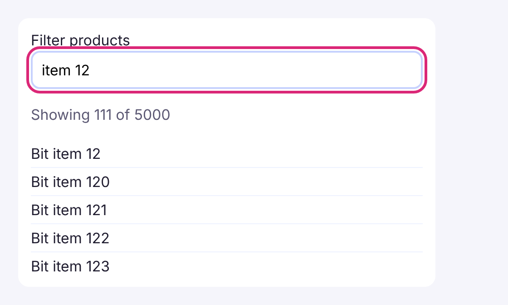
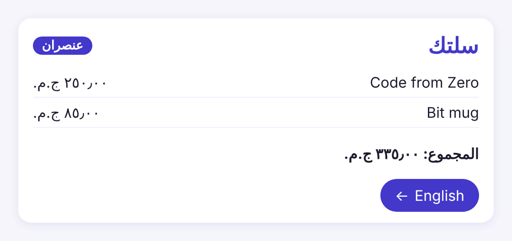

The code in this book is tested with Node.js 22. Every listing and its output is produced from the files in the book’s code repository.
JavaScript, Node.js and other names mentioned in this book are trademarks of their owners and are used for identification only.
ISBN: ———
Contents
Part 1: The Language
1Modern JavaScript in Depth7
2TypeScript for Real Projects27
3Modules, Tooling and Build Systems44
Part 2: Vue
4Components and Templates
5Reactivity and the Composition API
6Composables: Reusing Logic
7Vue Router and Server Data
8Forms and Validation
9Global State with Pinia
Part 3: Quality
10Design Systems and Component Libraries60
11Accessibility (WCAG) in Practice76
12Testing: Unit, Component and End-to-End91
13Performance and Core Web Vitals105
14Frontend Security120
15Internationalisation and RTL132
Part 4: Senior Work
16Frontend Architecture at Scale147
17Server Rendering with Nuxt
18Code Review, Mentoring and Technical Decisions162
19Capstone: A Production Dashboard
Appendix
Answers to the Exercises181
1
Chapter 1
Modern JavaScript in Depth
In this chapter you will learn to
predict when data is copied and when it is shared, and update it without side effects
use closures to keep state private
write classes with private fields, and never lose this again
use the modern toolkit: ?., ??, ??=, at, toSorted, Object.groupBy
choose between arrays, Map and Set, and write generators
explain the order in which asynchronous code runs, and combine promises safely
design errors that tell the whole story
In Book 1 you learned enough JavaScript to build a real app. Frameworks like React and Vue are written in that same language, and almost every confusing bug in them is really a JavaScript question: why did this value change? where did this go? why did that line run first? This chapter answers those questions once and for all. It is the foundation for everything else in this book.
Bit
Welcome back! I have been practising too. In this book we stop asking “does it work?” and start asking “will it still work next year, when the app is ten times bigger?” That is the senior question.
1.1Values and references
JavaScript has two kinds of values. Primitives (numbers, strings, booleans, null, undefined, bigint and symbol) are copied when you assign them. Objects, which include arrays and functions, are not copied: the variable holds a reference, an address that points to the object.
values.js
// Primitives are copiedlet a = 10;
let b = a;
b = 20;
console.log(a, b);
// Objects are shared: two names, one objectconst original = { name: "Sara", tags: ["js"] };
const same = original;
same.name = "Huda";
console.log(original.name);
// Spread copies only the first levelconst shallow = { ...original };
shallow.tags.push("ts");
console.log(original.tags);
// structuredClone copies every levelconst deep = structuredClone(original);
deep.tags.push("react");
console.log(original.tags, deep.tags);
Changing b did not change a: the number was copied.
same and original are two names for one object, so a change through either name is visible through both.
Spread, { ...original }, makes a shallow copy: a new outer object, but the inner array is still shared. That is why "ts" appeared in the original.
structuredClone makes a deep copy: every level is new. It is built into browsers and Node.
Updating without side effects
React and Vue both decide what to redraw by comparing references: if the object is the same object, they may assume nothing changed. So professionals rarely change data in place. They build a new object that shares the unchanged parts with the old one. This style is called immutable updates:
immutable.js
const cart = { items: [{ id: 1, qty: 1 }], coupon: null };
// Return a new object instead of changing the old onefunction addOne(cart, id) {
return {
...cart,
items: cart.items.map((item) =>
item.id === id ? { ...item, qty: item.qty + 1 } : item,
),
};
}
const next = addOne(cart, 1);
console.log(cart.items[0].qty, next.items[0].qty);
console.log(cart === next, cart.items === next.items);
Terminal
1 2
false false
The old cart still has quantity 1, and the new one has 2. Both the cart and the items array are new objects (false false), while the items that did not change are reused. Read addOne slowly: spread the old object, then override only what changed, at every level on the way down.
1.2Scope and closures
A scope is the region of code where a name exists. Variables declared with let and const live in the nearest block { … }. A function can see the variables of the scopes around it, even after those outer functions have finished. A function together with the variables it remembers is called a closure.
closures.js
function makeCounter(start = 0) {
let count = start; // private: only the three functions can see itreturn {
up: () => ++count,
down: () => --count,
value: () => count,
};
}
const likes = makeCounter();
const stock = makeCounter(10);
likes.up();
likes.up();
stock.down();
console.log(likes.value(), stock.value());
console.log(likes.count); // undefined: there is no way in from outside
Terminal
2 9
undefined
Each call to makeCounter creates a fresh count, so likes and stock do not share anything. Nobody outside can read or break count; they can only use the three functions. This is how JavaScript had private data long before classes had private fields, and it is exactly how React hooks and Vue composables keep their state.
Closures also make small, reusable tools. once wraps any function so it runs a single time, which is handy for connecting to a server or showing a welcome message:
once.js
function once(fn) {
let done = false;
let result;
return (...args) => {
if (!done) {
done = true;
result = fn(...args);
}
return result;
};
}
const connect = once(() => {
console.log("Connecting to the server…");
return"connection #1";
});
console.log(connect());
console.log(connect());
Terminal
Connecting to the server…
connection #1
connection #1
The classic loop puzzle
loop.js
for (var i = 1; i <= 3; i++) {
setTimeout(() => console.log("var:", i));
}
for (let j = 1; j <= 3; j++) {
setTimeout(() => console.log("let:", j));
}
Terminal
var: 4
var: 4
var: 4
let: 1
let: 2
let: 3
var is scoped to the whole function, so all three timers close over the samei, which is 4 by the time they run. let creates a new j for every turn of the loop, so each timer remembers its own. This is one of the reasons modern code never uses var.
1.3Classes, private fields and this
A class is a template for objects that share the same methods. Modern classes can have private fields, whose names start with #, static members that belong to the class itself, and getters that look like properties but run code:
classes.js
class Account {
#balance = 0; // private field: invisible outside the classstatic count = 0;
constructor(owner) {
this.owner = owner;
Account.count++;
}
get balance() {
returnthis.#balance;
}
deposit(amount) {
if (amount <= 0) thrownew RangeError("Amount must be positive");
this.#balance += amount;
returnthis; // returning this lets calls be chained
}
}
class SavingsAccount extends Account {
addInterest(rate) {
returnthis.deposit(Math.round(this.balance * rate));
}
}
const acc = new SavingsAccount("Sara");
acc.deposit(1000).deposit(500).addInterest(0.1);
console.log(acc.owner, acc.balance, Account.count);
console.log(acc instanceof Account);
try {
acc.deposit(-5);
} catch (error) {
console.log(error.name + ":", error.message);
}
Terminal
Sara 1650 1
true
RangeError: Amount must be positive
#balance cannot be read or changed outside the class, not even by mistake. The only way in is deposit, which checks the amount.
get balance() lets callers read acc.balance without being able to set it.
extends builds a new class on top of another; SavingsAccount has everything Account has, plus addInterest.
Throwing a RangeError for a bad argument is better than quietly ignoring it: the bug shows up where it starts.
Where did this go?
Inside a normal method, this is the object before the dot at the moment of the call. timer.tick() has timer before the dot. But when you pass timer.tick somewhere else, as a callback or an event handler, only the function travels, and the object is left behind:
this.js
class Timer {
seconds = 0;
tick() {
this.seconds++;
}
tickArrow = () => {
this.seconds++;
};
}
const timer = new Timer();
const run = (callback) => callback();
try {
run(timer.tick); // the method is passed without its object
} catch (error) {
console.log("Lost this:", error.message);
}
run(() => timer.tick()); // fix 1: call it inside an arrow function
run(timer.tick.bind(timer)); // fix 2: bind it to the object
run(timer.tickArrow); // fix 3: an arrow-function field keeps this
console.log(timer.seconds);
Terminal
Lost this: Cannot read properties of undefined (reading 'seconds')
3
Arrow functions do not have their own this; they use the this of the place where they were written. That is why the three fixes work, and why you will see arrow functions everywhere in event handlers.
Bit
A rule that saves hours: if a method will be passed somewhere else (an event, a timer, a callback), call it inside an arrow function, () => obj.method(). Then this is never lost.
1.4The modern toolkit
Every year JavaScript gains small features that remove whole classes of bugs. These are the ones you will use daily:
modern.js
const user = { name: "Omar", address: null, settings: { theme: "" } };
// ?. stops at null or undefined instead of crashing
console.log(user.address?.city);
console.log(user.address?.city ?? "unknown");
// || replaces every falsy value; ?? only null and undefined
console.log(user.settings.theme || "light", user.settings.theme ?? "light");
// ??= assigns only when the value is missing
user.settings.fontSize ??= 16;
console.log(user.settings);
const scores = [72, 95, 88, 61];
console.log(scores.at(-1), scores.findLast((s) => s > 80));
console.log(scores.toSorted((a, b) => b - a), scores); // toSorted returns a copy: the original keeps its order
undefined if a is null or undefined, otherwise a.b
Data from a server that may be missing
a ?? b
b only if a is null or undefined
Defaults that must keep 0 and ""
a ??= b
Set a to b only if it is missing
Filling in default settings
list.at(-1)
The last item
Instead of list[list.length - 1]
toSorted, toReversed, with
Like sort and friends, but return a copy
Immutable updates
Look closely at the second line of output: || threw away the empty string and used "light", while ?? kept it. If an empty string or a zero is a real value in your data, use ??.
Grouping and reshaping data
Object.groupBy sorts a list into buckets in one line, and Object.entries with Object.fromEntries lets you transform an object as if it were an array:
This is the shape of most dashboard code: group the raw records, then reduce each group to a number.
1.5Collections and generators
An object is fine for a fixed set of named fields. For a collection that grows and shrinks, JavaScript has two better tools. A Map stores key–value pairs, with keys of any type, in the order they were added. A Set stores each value once:
collections.js
// Map: keys of any type, kept in insertion orderconst visits = new Map();
for (const page of ["/home", "/shop", "/home", "/cart", "/home"]) {
visits.set(page, (visits.get(page) ?? 0) + 1);
}
console.log(visits);
console.log([...visits].toSorted((a, b) => b[1] - a[1])[0]);
// Set: each value onceconst tags = new Set(["js", "css", "js", "html", "css"]);
console.log(tags.size, tags.has("css"), [...tags]);
Use a Map when you look things up by a key that comes from data (an id, a URL, an object); use a Set to remove duplicates or to ask “have I seen this before?” quickly. Both are much faster than searching an array once the collection is large.
Generators: values on demand
A generator is a function, written with function*, that can pause. Each yield hands out one value and waits until the next one is asked for. Anything that works with for…of or spread can use it:
generators.js
function* range(from, to, step = 1) {
for (let n = from; n <= to; n += step) {
yield n; // pause here and hand n to the caller
}
}
console.log([...range(1, 10, 3)]);
// A generator that splits a list into pagesfunction* pages(items, size) {
for (let i = 0; i < items.length; i += size) {
yield items.slice(i, i + size);
}
}
const letters = "ABCDEFG".split("");
for (const page of pages(letters, 3)) {
console.log(page.join(" "));
}
Terminal
[ 1, 4, 7, 10 ]
A B C
D E F
G
Generators shine when values are expensive or endless: reading a big file line by line, or loading page after page from an API only while the user keeps scrolling.
1.6The event loop
JavaScript runs your code on one thread, one piece at a time. Work that has to wait (timers, network replies, clicks) is put in a queue, and the event loop picks the next piece when the current one is finished. There are two queues, and the difference explains many surprising bugs:
event-loop.js
console.log("1 synchronous code runs first");
setTimeout(() => console.log("5 a timer: a task, after all microtasks"), 0);
Promise.resolve().then(() => console.log("3 a promise callback: a microtask"));
queueMicrotask(() => console.log("4 another microtask, in order"));
console.log("2 still synchronous");
Terminal
1 synchronous code runs first
2 still synchronous
3 a promise callback: a microtask
4 another microtask, in order
5 a timer: a task, after all microtasks
All the synchronous code runs first, from top to bottom.
Then every microtask runs: promise callbacks and queueMicrotask. A microtask that adds more microtasks keeps the loop busy until the queue is empty.
Only then does the next task run: a timer, a network event, a click.
The practical rule: code after an await always runs later, even if the promise was already resolved. And a long synchronous loop blocks everything, including clicks and drawing the page, which is why heavy work belongs in small pieces or in a Web Worker.
Combining promises
In Book 1 you met Promise.all, which fails as soon as one promise fails. Real screens often need more control:
promises.mjs
const wait = (ms, value, fail = false) =>
new Promise((resolve, reject) =>
setTimeout(() => (fail ? reject(new Error(value)) : resolve(value)), ms),
);
const results = await Promise.allSettled([
wait(30, "profile"),
wait(10, "orders failed", true),
wait(20, "messages"),
]);
for (const r of results) {
console.log(r.status, r.value ?? r.reason.message);
}
// any: the first one to succeedconst fastest = await Promise.any([wait(40, "mirror A"), wait(15, "mirror B")]);
console.log("Fastest:", fastest);
// race: the first one to finish, success or failureconst timeout = (ms) => wait(ms, "Timed out after 50 ms", true);
try {
await Promise.race([wait(100, "slow answer"), timeout(50)]);
} catch (error) {
console.log(error.message);
}
Terminal
fulfilled profile
rejected orders failed
fulfilled messages
Fastest: mirror B
Timed out after 50 ms
Method
Resolves when
Use it for
Promise.all
All succeed (fails on the first failure)
Data the screen cannot work without
Promise.allSettled
All finish, with a status for each
Dashboards: show what loaded, mark what failed
Promise.any
The first one succeeds
Several servers with the same data
Promise.race
The first one finishes, either way
Time limits
The file ends in .mjs, which tells Node it is an ES module. Modules allow await at the top level, outside any function. Chapter 3 explains modules properly; for now, the extension is enough.
1.7Errors that tell the whole story
An error message is a note to the person who will debug your code at two in the morning; often that person is you. Two modern features make those notes much better: your own error classes, which can be told apart with instanceof, and the cause option, which keeps the original error when you add context:
errors.js
class NotFoundError extends Error {
constructor(what, options) {
super(`${what} was not found`, options);
this.name = "NotFoundError";
}
}
const users = new Map([[1, "Sara"]]);
function findUser(id) {
if (!users.has(id)) thrownew NotFoundError(`User #${id}`);
return users.get(id);
}
function loadProfile(id) {
try {
return findUser(id);
} catch (error) {
thrownew Error("Could not load the profile", { cause: error }); // keep the original error as the cause
}
}
try {
loadProfile(7);
} catch (error) {
console.log(error.message);
console.log("Because:", error.cause.name, "-", error.cause.message);
console.log(error.cause instanceof NotFoundError);
}
Terminal
Could not load the profile
Because: NotFoundError - User #7 was not found
true
The top message says what the user was trying to do; the cause says why it failed. Error-tracking services and the browser’s console show the whole chain. Never write catch (error) {} with an empty body: a swallowed error is a bug that hides.
Common mistakes
Mistake
What happens
Fix
Changing state in place: cart.items.push(x)
The screen does not update, or updates in the wrong place
Build a new object with spread
Copying with spread and editing a nested array
The original changes too
Copy every level you change, or use structuredClone
Passing obj.method as a callback
this is undefined
() => obj.method()
value || default for numbers
0 is replaced by the default
value ?? default
Promise.all for optional data
One failure hides everything else
Promise.allSettled
Empty catch
Errors disappear silently
Handle it, or rethrow with cause
Summary
Primitives are copied; objects are shared by reference. Spread copies one level, structuredClone every level.
Immutable updates build new objects and reuse what did not change. Frameworks depend on this.
A closure is a function plus the variables it remembers: the simplest way to keep state private.
Classes have private fields (#), getters and static members. this is the object before the dot at call time; arrow functions keep the outer this.
?., ??, ??=, at, toSorted and Object.groupBy make everyday code shorter and safer.
Use Map for lookups by key, Set for unique values, and generators for values on demand.
The event loop runs synchronous code, then all microtasks, then the next task.
Pick all, allSettled, any or race by what the screen needs. Give errors a class and a cause.
Quick check answers: 1. True: spread copies only the first level, so both point to the same list. 2. Because count exists only inside the closure; the outside world gets functions, not the variable. 3. 1 2 3 twice, once with “var:” and once with “let:”.
Practice projects
Each project builds a small, reusable tool of the kind you find inside real libraries. Write it first in your own way, run it, compare your output with the one below, and only then look at the solution in the code repository.
Project 1.1 · Easy
A memoize helper
Write memoize(fn), which returns a faster version of any one-argument function by remembering its answers.
You will practise: closures, Map, and measuring a function by counting its calls.
Inside memoize, create a Map called cache. The closure keeps it alive between calls.
Return an arrow function that takes arg. If cache.has(arg), return the saved value.
Otherwise call fn(arg), save the result with cache.set, and return it.
Count the real calls of a slow function with a variable outside it, and prove that repeated arguments are free.
Memoize a recursive Fibonacci function. It must call the memoized version of itself, or the cache is never used.
Hint: memoize only pure functions: functions whose answer depends only on their arguments. A function that reads the clock or a server would return stale answers forever.
Your result should look like this:
Terminal
81 81 144 81
Real calls: 2
fib(70) = 190392490709135
Project 1.2 · Medium
An event emitter
Build the small class that sits at the heart of Node, browsers and many libraries: parts of a program announce events, and other parts listen.
You will practise: classes, a private field, Map of Sets, rest parameters, and returning a clean-up function.
Create class Emitter with a private #listeners = new Map(). Each key is an event name; each value is a Set of functions.
on(event, fn) adds the function, creating the Set the first time. Make it return () => this.off(event, fn).
off(event, fn) removes it. Use ?. so that removing from an unknown event is harmless.
emit(event, ...args) calls every listener with the arguments. Loop over a copy ([...set]), because a listener may remove itself while you loop.
once(event, fn) listens with a wrapper that stops itself before calling fn.
Hint: returning the “stop” function from on is a pattern you will meet again: React’s useEffect and Vue’s watch both use it. Whoever starts listening holds the way to stop.
Your result should look like this:
Terminal
Log: order 101
First order of the day: 101
Log: order 102
No more listeners.
Project 1.3 · Challenge
Retry with exponential backoff
Networks fail for a moment all the time. Write retry(fn, options), which tries an async function again, waiting longer each time, and gives up with a clear error.
You will practise:async/await in a loop, default options with destructuring, 2 ** n, and errors with cause.
Write the wait(ms) helper that returns a promise.
Give retry a second parameter { retries = 3, delay = 10 } = {}, so it works with no options at all.
Loop over attempts. In a try, return await fn(attempt): the await is essential, or the catch never sees the failure.
In the catch, give up when the attempts are used up, by throwing a new error with { cause: error }. Otherwise wait delay * 2 ** (attempt - 1) and loop.
Test it with a fake API, flaky(n), that fails n times and then succeeds. Try one that recovers and one that never does.
Hint: in production, add a little randomness (“jitter”) to the pause, so that a thousand phones that lost the network together do not all retry at the same millisecond. And never retry actions that are not safe to repeat, such as charging a card, unless the server supports it.
Your result should look like this:
Terminal
API that fails twice:
attempt 1 failed, waiting 10 ms
attempt 2 failed, waiting 20 ms
OK (on attempt 3)
API that fails five times:
attempt 1 failed, waiting 10 ms
attempt 2 failed, waiting 20 ms
Gave up after 3 attempts - Network error
Exercises
Easy Write removeItem(cart, id) in the immutable style of immutable.js, and prove with === that the original cart is unchanged.
Easy Using Object.groupBy, group the words ["apple", "avocado", "banana", "blueberry", "cherry"] by their first letter.
Medium Add a withdraw(amount) method to Account that throws a custom InsufficientFundsError when the balance is too low. Test both cases.
Medium Without running it, write down the order of the output of: setTimeout(() => log("A")); Promise.resolve().then(() => log("B")); log("C");. Then run it to check.
Challenge Write a generator take(iterable, n) that yields only the first n values of any iterable, and use it with an endless generator of even numbers.
Answers to the exercises are at the end of the book and in the book’s code repository.
Coming up in Chapter 2
You saw how much can go wrong when a value is not what you expected. TypeScript catches most of those mistakes before you even run the code. In the next chapter you will add types to real code, model data that can be in several states, and let the editor find bugs for you.
2
Chapter 2
TypeScript for Real Projects
In this chapter you will learn to
explain what TypeScript adds to JavaScript, and what it does not
let TypeScript infer types, and annotate where it matters
describe objects with optional and read-only properties
narrow union types, and model screens with discriminated unions
write generic functions and types
build new types from old ones with utility types, as const and satisfies
check data that arrives from outside your program
In the last chapter, many examples ended with an error that appeared only when the code ran: a missing property, a wrong type, a value that was undefined. In a big app those errors appear in front of users. TypeScript is JavaScript with types written on top, and a tool, the compiler, that reads those types and finds such mistakes while you type. Almost every professional frontend team uses it today.
Bit
Think of types as labels on boxes. If a box says “numbers only”, nobody can put a word in it by mistake, and everybody who opens it knows what is inside. TypeScript checks the labels for you, all day, for free.
2.1Mistakes found before running
Here is a short file with three bugs. JavaScript would run it and fail somewhere later, or worse, quietly compute NaN. The TypeScript compiler, tsc, refuses it straight away and says exactly where and why:
$ npx tsc --noEmit why.ts
why.ts(4,34): error TS2551: Property 'quantitiy' does not exist on type 'Product'. Did you mean 'quantity'?
why.ts(7,39): error TS2322: Type 'string' is not assignable to type 'number'.
why.ts(9,11): error TS2741: Property 'quantity' is missing in type '{ name: string; price: number; }' but required in type 'Product'.
Each message gives the file, the line and column, an error code, and a sentence. The first even suggests the fix. Your editor shows the same messages as red underlines while you type, so most of the time you never run the build to see them.
Two facts are worth knowing from the start:
Types disappear when the code runs. Browsers and Node run plain JavaScript; the types are removed first. Node can even run a .ts file directly by deleting the types, which is how every example in this chapter is run. So types cost nothing at run time, but they also check nothing at run time. Data from a server must still be checked (section 2.6).
TypeScript is JavaScript. Every JavaScript file is almost a valid TypeScript file. You can add types slowly, file by file.
2.2Annotations and inference
You write a type after a colon: name: string. But you need to write far fewer types than you might expect, because TypeScript infers them from the values:
basics.ts
// Inferred: TypeScript knows these types without being toldlet city = "Cairo";
const year = 2026;
const scores = [72, 95, 88];
// Annotate function parameters and the return typefunction average(values: number[]): number {
return values.reduce((sum, v) => sum + v, 0) / values.length;
}
function greet(name: string, title?: string): string {
return title ? `${title} ${name}` : name;
}
console.log(city, year, average(scores));
console.log(greet("Sara"), "|", greet("Sara", "Dr."));
Terminal
Cairo 2026 85
Sara | Dr. Sara
city is inferred as string, year as the exact number 2026 (it is a const), and scores as number[].
Function parameters cannot be inferred, so you annotate them. That is where types do most of their work: they are the contract between the function and every caller.
title?: string makes the parameter optional. Inside the function its type is string | undefined, and TypeScript makes you handle both.
Writing the return type (: number) is optional, but it is a good habit for exported functions: a mistake inside the function is then reported there, not at every caller.
Describing objects
An object type lists its properties. Mark a property ? if it may be missing, and readonly if it must never change after the object is created:
$ npx tsc --noEmit objects.ts
objects.ts(12,6): error TS2540: Cannot assign to 'id' because it is a read-only property.
objects.ts(13,12): error TS2339: Property 'push' does not exist on type 'readonly string[]'.
objects.ts(14,13): error TS18048: 'user.phone' is possibly 'undefined'.
Changing name is allowed. Changing id is not. The roles array is readonly string[], so it has no push at all. And the compiler noticed that phone might be missing: the code must first check it, for example with user.phone?.length.
You will also see interface User { … } instead of type User = { … }. For object shapes they are nearly the same. This book uses type everywhere, because it also works for unions, which come next. Pick one style per project and stay with it.
2.3Unions and narrowing
A union type, written with |, means “one of these”. Inside the function, every check you write narrows the type: after typeof value === "string", TypeScript knows it is a string; in the rest of the function, it knows it is not:
narrowing.ts
function formatPrice(value: number | string | null): string {
if (value === null) return"Free";
if (typeof value === "string") return value; // here value is a stringreturn`${value.toFixed(2)} EGP`; // here it can only be a number
}
type Cat = { kind: "cat"; meows: boolean };
type Dog = { kind: "dog"; barks: boolean };
function describe(pet: Cat | Dog): string {
if ("meows"in pet) return pet.meows ? "A talkative cat" : "A quiet cat";
return pet.barks ? "A loud dog" : "A calm dog";
}
console.log(formatPrice(19.5), "|", formatPrice("Ask us"), "|", formatPrice(null));
console.log(describe({ kind: "cat", meows: true }), "|", describe({ kind: "dog", barks: false }));
Terminal
19.50 EGP | Ask us | Free
A talkative cat | A calm dog
TypeScript understands all the usual checks: === null, typeof, Array.isArray, instanceof, and "key" in object. You do not need special syntax; you write normal JavaScript, and the types follow your logic.
Discriminated unions: one type for every state of a screen
Every screen that loads data can be in four states: it has not started, it is loading, it has the data, or it failed. Beginners often use three separate variables, loading, data and error, and then meet impossible combinations, such as an error and data at the same time. A discriminated union makes those combinations impossible: each state is an object with a common status field, and only the right state has data or message:
remote.ts
type RemoteData<T> =
| { status: "idle" }
| { status: "loading" }
| { status: "success"; data: T }
| { status: "error"; message: string };
function assertNever(value: never): never {
thrownew Error("Unexpected state: " + JSON.stringify(value));
}
function render(state: RemoteData<string[]>): string {
switch (state.status) {
case"idle":
return"Press the button to load";
case"loading":
return"Loading…";
case"success":
return`${state.data.length} products: ${state.data.join(", ")}`; // data exists only in this casecase"error":
return`Could not load: ${state.message}`;
default:
return assertNever(state); // if a case is missing, state is not never here, and the build fails
}
}
const states: RemoteData<string[]>[] = [
{ status: "idle" },
{ status: "loading" },
{ status: "success", data: ["book", "mug"] },
{ status: "error", message: "You are offline" },
];
for (const state of states) console.log(render(state));
Terminal
Press the button to load
Loading…
2 products: book, mug
Could not load: You are offline
Inside case "success", TypeScript knows that state.data exists; anywhere else, reading it is an error. The default branch is the clever part. If every case is handled, state has the type never there, meaning “this cannot happen”. Now watch what happens when a colleague deletes the "error" case:
Terminal
$ npx tsc --noEmit remote-missing.ts
remote-missing.ts(20,26): error TS2345: Argument of type '{ status: "error"; message: string; }' is not assignable to parameter of type 'never'.
The build fails and names the forgotten state. This pattern is called an exhaustive check, and it turns “we forgot to show the error message” from a bug report into a compile error. You will use it in every framework chapter of this book.
2.4Generics
Some functions work the same way for any type: “give me the first item of a list” does not care whether the list holds products or users. A generic function has a type parameter, written in angle brackets, which stands for “whatever type the caller uses”:
generics.ts
function first<T>(list: readonly T[]): T | undefined {
return list[0];
}
function byId<T extends { id: number }>(list: readonly T[]): Map<number, T> {
returnnew Map(list.map((item) => [item.id, item]));
}
type Result<T> = { ok: true; value: T } | { ok: false; error: string };
function parseAge(text: string): Result<number> {
const age = Number(text);
if (!Number.isInteger(age) || age < 0) return { ok: false, error: `"${text}" is not an age` };
return { ok: true, value: age };
}
const products = [
{ id: 1, name: "Book", price: 25 },
{ id: 2, name: "Mug", price: 8 },
];
console.log(first(products)?.name, first<number>([]));
console.log(byId(products).get(2)?.price);
for (const text of ["34", "-2", "abc"]) {
const result = parseAge(text);
console.log(result.ok ? `Age: ${result.value}` : result.error);
}
Terminal
Book undefined
8
Age: 34
"-2" is not an age
"abc" is not an age
first<T> returns T | undefined. Called with products, it returns a product, so .name is allowed; called with an empty list, the undefined forces you to handle the missing case.
T extends { id: number } is a constraint: byId accepts any objects, as long as they have a numeric id.
Result<T> is a generic type: a success with a value, or a failure with a message. It is a discriminated union on ok, so callers must check before using the value. Many teams return results like this for expected failures, such as bad user input, and keep exceptions for real surprises.
You will mostly use generics written by others: Array<T>, Map<K, V>, Promise<T>, and every framework’s hooks and stores. Writing your own is worth it when a function would otherwise need any.
2.5Types from types
A real app has one Product type and many variations of it: the fields a form may change, the fields a card shows, the fields a new product needs. Writing each by hand means updating five types when the product gains a field. Utility types build them from the original instead:
utility.ts
type Product = { id: number; name: string; price: number; stock: number };
// New types made from an existing onetype ProductUpdate = Partial<Omit<Product, "id">>;
type ProductCard = Pick<Product, "name" | "price">;
function update(product: Product, changes: ProductUpdate): Product {
return { ...product, ...changes };
}
const mug: Product = { id: 2, name: "Mug", price: 8, stock: 40 };
const card: ProductCard = { name: mug.name, price: mug.price };
console.log(update(mug, { price: 7 }), card);
// One list of values, and the type comes from itconst ROLES = ["viewer", "editor", "admin"] as const;
type Role = (typeof ROLES)[number];
const labels = {
viewer: "Can view",
editor: "Can edit",
admin: "Full control",
} satisfies Record<Role, string>;
const role: Role = "editor";
console.log(ROLES.length, labels[role]);
Every property optional: an update with only the changed fields
Required<T>
Every property required
Pick<T, "a" | "b">
Only those properties
Omit<T, "id">
All properties except those
Record<K, V>
An object with keys of type K and values of type V
Readonly<T>
Every property read-only
ReturnType<typeof fn>
Whatever the function returns
The second half of the example shows a pattern you will use often. as const tells TypeScript to keep the exact values of the array, and (typeof ROLES)[number] turns them into the union "viewer" | "editor" | "admin". The list of roles is written once, and the type can never drift from it. Finally, satisfies checks that labels has a label for every role, without changing the type of labels itself. Forget a role, or misspell one, and the build fails.
2.6The boundary: unknown and type guards
Types describe your own code. Data that arrives from outside, from a server, from localStorage or from a file, has no types until you check it. TypeScript offers two ways to say “I don’t know what this is”:
any switches checking off. Anything goes, and the bugs come back. Avoid it.
unknown means “could be anything, so you must check before you use it”. This is the honest type for outside data.
A type guard is a function that checks a value at run time and tells TypeScript the result. Its return type, value is User, is the promise: “if I return true, it is a User”:
boundary.ts
type User = { id: number; name: string };
// A type guard: if it returns true, TypeScript treats value as a Userfunction isUser(value: unknown): value is User {
return (
typeof value === "object" &&
value !== null &&
"id"in value &&
typeof value.id === "number" &&
"name"in value &&
typeof value.name === "string"
);
}
function parseUser(json: string): User {
const data: unknown = JSON.parse(json);
if (!isUser(data)) thrownew TypeError("The server sent a user in the wrong shape");
return data;
}
console.log(parseUser('{"id": 1, "name": "Sara"}').name);
try {
parseUser('{"id": "1", "fullName": "Sara"}');
} catch (error) {
console.log((error as Error).message);
}
Terminal
Sara
The server sent a user in the wrong shape
The second server reply looked almost right, with an id that was a string and a fullName instead of name. Without the guard, the bug would have shown up somewhere far away, as an empty name on a screen. With it, the program stops at the door with a clear message. Writing guards by hand gets long; in the chapter on forms you will use a library that writes them from a schema.
2.7A strict setup for real projects
The compiler has many options. New projects should switch on strict, which turns on all the important checks, and one more that strict leaves out, noUncheckedIndexedAccess. It reminds you that looking something up in an object or array may find nothing:
$ npx tsc --noEmit index.ts
index.ts(5,13): error TS18048: 'cap' is possibly 'undefined'.
index.ts(6,13): error TS2532: Object is possibly 'undefined'.
Without the option, both lines would compile and then crash. In a project, these settings live in tsconfig.json, which you will create with the build tools in the next chapter. The settings used for every example in this book are:
Impossible states, such as data and an error together
One discriminated union with a status
A switch without a never default
A new state is silently ignored
default: return assertNever(state)
Copying a type to make a variation
The copies drift apart
Pick, Omit, Partial
Turning off strict to silence errors
Most of TypeScript’s value is lost
Keep strict; fix errors one by one
Summary
TypeScript adds types to JavaScript, and the compiler checks them before the code runs. The types are then removed.
Let TypeScript infer most types; annotate function parameters, and return types of exported functions.
Object types can have optional (?) and readonly properties.
Unions (|) are narrowed by ordinary checks. A discriminated union with an exhaustivenever check models every state of a screen safely.
Generics write one function or type for many types; constraints limit what is allowed.
Utility types, as const and satisfies build types from one source of truth.
Outside data is unknown until a type guard checks it. as checks nothing.
Use strict and noUncheckedIndexedAccess, and prefer syntax that simply disappears.
Quick check answers: 1. No: the types are removed before the code runs, so outside data must be checked by your own code. 2. number. 3. Because the union makes impossible combinations impossible to write, and TypeScript shows which fields exist in each state.
Practice projects
In each project, write the types first, before any function. Then let the compiler guide you: when it complains, read the message before changing anything. Run npx tsc --noEmit often, and run the file with node file.ts to see the output.
Project 2.1 · Easy
A typed shopping cart
Rewrite a shopping cart in TypeScript, with immutable updates and a coupon, so that the compiler protects every function.
You will practise: object types, readonly, optional properties, default parameters, Record, and ?? with an indexed lookup.
Write three types: Product (with a read-only id), CartLine (a product and a quantity), and Cart (a read-only array of lines and an optional coupon).
Write add(cart, product, quantity = 1): Cart. If the product is already in the cart, return a new cart with that line’s quantity increased; otherwise append a new line.
Keep the coupons in const DISCOUNTS: Record<string, number>.
Write total(cart): number. Because of noUncheckedIndexedAccess, DISCOUNTS[code] may be undefined, so write ?? 0.
Try to break it on purpose: change a product’s id, push into cart.lines, pass a price as a string. Read each error.
Hint: round money to two decimal places only at the end, in total. Rounding at every step adds small errors together.
Your result should look like this:
Terminal
2 × Book, 2 × Mug
Total: 66
With WELCOME10: 59.4
Project 2.2 · Medium
The life of an order
Model every status an online order goes through as a discriminated union, and write functions that cannot forget a status.
You will practise: discriminated unions, narrowing in a switch, assertNever, and functions that answer questions about a state.
Write type OrderStatus with five variants on a kind field: placed, paid (with an amount), shipped (with a tracking number), delivered and cancelled (with a reason). Every variant has an at time.
Write describe(status): string with a switch. Use the extra fields only in their own case, and finish with default: return assertNever(status).
Write canCancel(status): boolean: only orders that are placed or paid may be cancelled.
Print a short history of three statuses, marking the ones that can still be cancelled.
Add a sixth variant, returned, and let the compiler show you every place that must change.
Hint: step 5 is the point of the whole project. In a real codebase the switch statements may be spread across twenty files; the compiler finds all of them in a second.
Your result should look like this:
Terminal
Order placed at 09:12 [can cancel]
Paid 41 EGP (09:14) [can cancel]
On its way, tracking number EG-55120
Project 2.3 · Challenge
A type-safe event emitter
Take the event emitter from the last chapter and give it types, so that the names of events and the arguments of each one are checked everywhere.
You will practise: generic classes, keyof, indexed access types (Events[E]), mapped types, and labelled tuples.
Describe your events as one type, where each key is an event name and each value is a tuple of its arguments: { order: [id: number, total: number]; logout: [] }.
Write class Emitter<Events extends Record<string, unknown[]>>.
Store listeners in a mapped type: { [E in keyof Events]?: Set<(...args: Events[E]) => void> }. Each event gets a set of functions with exactly its own arguments.
Type on and emit with a type parameter E extends keyof Events, so the event name decides the argument types.
Check the result with a file of deliberate mistakes: the wrong arguments, a misspelled event, and a listener that expects a string.
Hint: notice that the listener (id, total) => … needs no annotations at all: TypeScript infers both types from the event name. Well-typed libraries feel like this: you write less, and the editor knows more.
Your result should look like this:
Terminal
Order #101: 41.00
Goodbye!
And the compiler catches all three mistakes:
Terminal
$ npx tsc --noEmit typed-emitter-bad.ts
typed-emitter-bad.ts(27,6): error TS2554: Expected 3 arguments, but got 2.
typed-emitter-bad.ts(28,11): error TS2345: Argument of type '"ordr"' is not assignable to parameter of type 'keyof ShopEvents'.
typed-emitter-bad.ts(29,18): error TS2345: Argument of type '(id: string) => string' is not assignable to parameter of type '(id: number, total: number) => void'.
Types of parameters 'id' and 'id' are incompatible.
Type 'number' is not assignable to type 'string'.
Exercises
Easy Write a type Book with a read-only isbn, a title, an optional subtitle and an array of authors, and a function label(book: Book): string that adds the subtitle only when it exists.
Easy Rewrite type Size = "S" | "M" | "L" as a constant array with as const, derive the type from it, and print how many sizes there are.
Medium Add a fifth state, { status: "empty" }, to RemoteData in remote.ts. Run the check, read the error, and handle the new state.
Medium Write a generic last<T>(list: readonly T[]): T | undefined and a generic groupBy<T, K extends string>(list: readonly T[], key: (item: T) => K): Record<K, T[]>.
Challenge Write a type guard isProductList(value: unknown): value is Product[] for { id: number; name: string; price: number } and use it to read a JSON string safely. Test it with good data, with a price that is a string, and with an object that is not an array.
Answers to the exercises are at the end of the book and in the book’s code repository.
Coming up in Chapter 3
Real apps are not one file. In the next chapter you will split code into modules, install packages with npm, and set up a modern project with Vite, TypeScript, a linter and a formatter: the same foundation every chapter after it builds on.
3
Chapter 3
Modules, Tooling and Build Systems
In this chapter you will learn to
split code into ES modules with named and default exports
read and manage package.json: dependencies, versions, the lockfile and scripts
create a project with Vite, and understand the development server and the production build
load rarely used code only when it is needed
keep code clean and consistent with ESLint and Prettier
solve a dependency conflict instead of forcing it
Until now every example was a single file. A real frontend has hundreds of files, uses dozens of packages written by other people, and must reach the browser as a few small, fast files. The tools that make this possible are called the toolchain. You do not need to know how they work inside, but you must know what each one does, how to read its output, and what to do when it complains. This chapter sets up the same toolchain that the rest of the book uses.
Bit
Every command in this chapter was really run while the book was made, and you see exactly what it printed, warnings and errors included. Version numbers on your screen will be newer. That is normal: read the meaning, not the numbers.
3.1ES modules
A module is a file with its own scope. Nothing inside it is visible to other files unless it is exported, and nothing outside is visible inside unless it is imported. This is the standard module system of JavaScript, called ES modules (ESM), and it works the same way in browsers, in Node and in every build tool.
prices.mjs
// This line runs once, however many modules import this file
globalThis.priceLoads = (globalThis.priceLoads ?? 0) + 1;
// Named exports: any number per moduleexportconst VAT = 0.14;
exportfunction withVat(price) {
return Math.round(price * (1 + VAT) * 100) / 100;
}
// One default export per module, at mostexportdefaultfunction formatPrice(value) {
return`${value.toFixed(2)} EGP`;
}
A named export, export const VAT, is imported with the same name in braces: import { withVat } from "./prices.mjs".
A default export is imported without braces, under any name you choose: import formatPrice from …. A module has at most one.
The path starts with ./ for your own files. A bare name, like "vite", means a package from node_modules.
Big folders often have an index file that re-exports their public parts, so other code imports from one place and the folder can reorganise its insides freely:
index.mjs
// A "barrel": one entry point that re-exports the public partsexport { cartTotal } from"./cart.mjs";
export { default as formatPrice, VAT } from"./prices.mjs";
Imported: function function 0.14
Cart total: 41.04 EGP
114 9.00 EGP
Times the price module was loaded: 1
Look at the last line. prices.mjs was imported by three files, but it was loaded and run only once. Every importer receives the same module object. That is why a module is a natural place for things there should be only one of: a configuration, a cache, a connection to a server.
3.2A project with Vite
Browsers can load ES modules directly, but a real app needs more: TypeScript must lose its types, hundreds of files should become a few, images need unique names so caches stay correct, and while you work, the page should update the moment you save. Vite (French for “fast”) does all of this and has become the standard starting point for React, Vue and plain TypeScript projects. Create a project with one command:
terminal
# Create a project from the vanilla TypeScript template$ npm create vite@latest my-shop -- --template vanilla-ts --no-interactive
create-vite v9.3.4
Scaffolding project in ~/code/my-shop...
$ cd my-shop# Download the packages it needs$ npm install
added 17 packages, and audited 18 packages in 5s
# What the template created$ find . -path ./node_modules -prune -o -type f -print | sort
./.gitignore
./index.html
./package-lock.json
./package.json
./src/format.ts
./src/main.ts
./src/products.ts
./src/style.css
./tsconfig.json
The template creates a demo page; it was replaced here by a small product list in three files, products.ts, format.ts and main.ts, so you can follow every line. Notice that the TypeScript files import each other with the .ts extension: Vite understands it, and the template’s settings allow it.
"type": "module" makes every .js file an ES module.
scripts are named commands. npm run dev starts Vite’s development server; npm run build first checks the types with tsc, then builds; npm run preview serves the finished build.
devDependencies are tools needed to build the app. Libraries the app itself uses at run time go under dependencies; npm install some-library puts them there.
The version numbers follow semantic versioning: MAJOR.MINOR.PATCH. A patch fixes bugs, a minor version adds features, and a major version may break your code. ^8.3.6 means “8.3.6 or any newer 8.x.x”; ~7.0.2 means “7.0.2 or any newer 7.0.x”. The exact versions that were installed are recorded in package-lock.json. Commit that file, and use npm ci on servers: it installs exactly what the lockfile says, so every computer runs the same code.
The development server
npm run dev starts a server, usually at http://localhost:5173. It does not bundle anything: it sends each module to the browser as it is requested, translating TypeScript on the fly, which is why it starts in a moment even for big apps. When you save a file, it pushes the change to the open page, often without even reloading it. This is called hot module replacement (HMR), and it is why frontend work today feels instant.
3.3The production build
For real visitors, speed matters more than convenience. npm run build creates the dist folder, ready to upload to any static host:
terminal
# Build the site for production$ npm run build
✓ 7 modules transformed.
dist/index.html 0.39 kB │ gzip: 0.26 kB
dist/assets/index-D9CP7r17.css 0.06 kB │ gzip: 0.08 kB
dist/assets/index-D9l0HIoC.js 1.05 kB │ gzip: 0.55 kB
✓ built in 85ms
All seven modules became one JavaScript file and one CSS file: fewer requests.
The code is minified: spaces, comments and long names are removed. The “gzip” column is the size actually sent over the network, because servers compress text.
Each file name contains a hash of its content, such as index-D9l0HIoC.js. When the content changes, the name changes, so browsers can keep files in their cache forever and still never show an old version.
Code that nobody imports is dropped. This is called tree shaking, and it works best with named exports, which the tools can follow.
Loading code only when it is needed
Some code is used by few visitors: a report, a chart, an admin page. A dynamic import, await import("./report.ts"), is a function call that loads a module when the line runs. Vite sees it and puts that module in a separate file:
# Build again after adding a lazy import$ npm run build
✓ 9 modules transformed.
dist/index.html 0.39 kB │ gzip: 0.26 kB
dist/assets/index-D9CP7r17.css 0.06 kB │ gzip: 0.08 kB
dist/assets/report-BcorEaka.js 0.36 kB │ gzip: 0.22 kB
dist/assets/index-Bu7zpKrj.js 2.96 kB │ gzip: 1.36 kB
✓ built in 75ms
The new file, report-….js, is downloaded only when someone presses the button. This technique is called code splitting; frameworks use it to load each page of an app separately, as you will see in the chapter on routing.
index.html560px
Figure 3.1: The built site, served from dist, after pressing the button: the report module was loaded on demand.
3.4Linting and formatting
Two more tools belong in every project. A linter reads your code and reports likely bugs and bad patterns. A formatter rewrites the layout of your code, spaces, quotes and line breaks, in one consistent style, so that nobody argues about it in code reviews. The standard choices are ESLint and Prettier. Installing them gave a surprise:
terminal
# Add a linter and a formatter$ npm install -D eslint @eslint/js typescript-eslint prettier
npm error code ERESOLVE
npm error ERESOLVE unable to resolve dependency tree
npm error Found: typescript@7.0.2
npm error Could not resolve dependency:
npm error peer typescript@">=4.8.4 <6.1.0" from typescript-eslint@8.73.0
# Choose a TypeScript that typescript-eslint supports$ npm install -D typescript@~6.0.0 eslint @eslint/js typescript-eslint prettier
added 96 packages, removed 1 package, changed 1 package, and audited 113 packages in 4s
# The direct dependencies, and their exact versions$ npm ls --depth=0
├── @eslint/js@10.0.1
├── eslint@10.15.0
├── prettier@3.10.1
├── typescript-eslint@8.73.0
├── typescript@6.0.3
└── vite@8.3.8
# Name the commands the team will run$ npm pkg set scripts.lint="eslint src" scripts.format="prettier --write src" scripts.check="tsc && eslint src && prettier --check src"
Reading a dependency conflict
The first install stopped with ERESOLVE. Read the three lines that matter: the project has typescript@7.0.2; the package typescript-eslint declares a peer dependency on TypeScript, saying it only works with versions from 4.8.4 up to, but not including, 6.1.0. TypeScript 7 was so new that this tool did not support it yet. You will meet this situation in every real project.
You have three honest choices: wait for the tool to support the new version; use another tool; or, as here, choose a version that every package supports. TypeScript 6.0 is fully supported, and its type checking is the same for everything in this book, so the second command installs it with the other tools. The wrong choice is --force or --legacy-peer-deps. They install anyway, and the tool may then fail in strange ways weeks later.
The last command adds three scripts. From now on, everyone on the team runs npm run lint, npm run format and npm run check, without having to remember the exact commands:
ESLint is configured in eslint.config.js. This configuration starts from the recommended rules for JavaScript and TypeScript and adds two of its own: eqeqeq forbids ==, and no-console warns about forgotten debugging lines:
const greeting = "Hello";
exportfunction total(prices: any[]) {
let sum = 0;
for (const price of prices) {
if (price == null) continue;
sum += price;
}
return sum;
}
terminal
# Check the code$ npx eslint src
~/code/my-shop/src/total.ts
1:7 error 'greeting' is assigned a value but never used @typescript-eslint/no-unused-vars
3:31 error Unexpected any. Specify a different type @typescript-eslint/no-explicit-any
6:15 error Expected '===' and instead saw '==' eqeqeq
✖ 3 problems (3 errors, 0 warnings)
Each line gives the position, the problem and the rule’s name. Search for the name when a message is not clear; every rule has a page explaining why it exists. Editors show these problems as you type, like TypeScript errors.
Prettier
terminal
# Is the code formatted?$ npx prettier --check src
Checking formatting...
[warn] src/format.ts
[warn] src/style.css
[warn] Code style issues found in 2 files. Run Prettier with --write to fix.
# Format every file$ npx prettier --write src
src/format.ts 67ms
src/main.ts 22ms (unchanged)
src/products.ts 8ms (unchanged)
src/style.css 19ms
$ cat src/format.ts
export function formatPrice(value: number): string {
return `${value.toFixed(2)} EGP`;
}
--check only reports; --write fixes. Set your editor to run Prettier every time you save, and you will never format code by hand again.
3.5Configuration and secrets
Apps often need settings that differ between your computer and the real site, such as the address of the API. Vite reads them from .env files and exposes variables whose names start with VITE_:
.env.production
VITE_API_URL=https://api.example.com
In code, import.meta.env.VITE_API_URL gives the value, and the build writes it into the JavaScript files.
Common mistakes
Mistake
What happens
Fix
Forgetting ./ in an import path
The tool looks for a package with that name and fails
"./format.ts" for your own files
Not committing package-lock.json
Different computers install different versions
Commit it; use npm ci in CI and on servers
Committing node_modules or dist
Huge repositories and endless conflicts
Keep them in .gitignore
Installing with --force after ERESOLVE
Tools fail later in confusing ways
Read the conflict, then choose compatible versions
Opening dist/index.html by double-clicking
A blank page: modules need a server
npm run preview
A secret in a VITE_ variable
Anyone can read it
Keep secrets on the server
Summary
ES modules share code with export and import. A module runs once; every importer gets the same instance.
package.json lists scripts and dependencies; semantic versions say which updates are allowed, and the lockfile records the exact ones.
Vite serves modules instantly while you work (with HMR) and builds minified, hashed, tree-shaken files for production.
Dynamic imports split rarely used code into files that load on demand.
ESLint finds likely bugs; Prettier keeps one style. Run both through scripts, before every commit.
A peer dependency conflict is information. Choose compatible versions instead of forcing.
Configuration goes in .env files; secrets never go in the frontend.
Quick check answers: 1. Once. 2. No: the caret allows minor and patch updates within major version 2. 3. The hash changes whenever the content changes, so browsers can cache the files forever and still always load the newest version.
Practice projects
These projects set up habits rather than features. You will use all three in every project for the rest of this book, so take the time to do them properly in your own Vite project.
Project 3.1 · Easy
A small utility library with a public face
Organise helper functions into modules, and decide which of them the rest of the app may use.
You will practise: named exports, re-exports, a barrel file, and keeping some code internal.
Create a folder modules with text.mjs (slugify and truncate) and numbers.mjs (clamp and percent).
slugify turns a title into a web address: lower case, no spaces at the ends, and every run of other characters becomes one -. The pattern \p{L} means “any letter in any language”, so it works for Arabic too.
Add internal.mjs with a helper used only inside the folder.
Write index.mjs that re-exports the four public functions, and not the internal one.
In app.mjs, import only from ./index.mjs and try each function.
Hint: the barrel is a promise to the rest of the team: “these functions are stable; everything else may change”. Keep it small.
Your result should look like this:
Terminal
modern-javascript-in-depth
Modern JavaScript…
100 0
35%
Project 3.2 · Medium
One command to check everything
Give your project a check script that runs the type checker, the linter and the formatter in order, and stops at the first problem.
You will practise: npm scripts, && to chain commands, ESLint rules, and reading which tool failed.
Install ESLint, typescript-eslint and Prettier as in section 3.4, resolving the TypeScript version if needed.
Add the scripts with npm pkg set: lint, format and check, where check is tsc && eslint src && prettier --check src.
Add a file that uses var, and run npm run check. Notice that tsc passed silently and ESLint stopped the chain.
Fix the problem and run the check again until it passes.
Make it a habit: run npm run check before every git commit.
Hint:&& runs the next command only if the previous one succeeded. Put the fastest checks first, so you hear about problems sooner. Many teams also run this script automatically with a Git hook.
Your result should look like this:
terminal
# Run every check before committing$ npm run check
~/code/my-shop/src/discount.ts
2:3 error Unexpected var, use let or const instead no-var
✖ 1 problem (1 error, 0 warnings)
1 error and 0 warnings potentially fixable with the `--fix` option.
# After fixing the problem$ npm run check
All matched files use Prettier code style!
Project 3.3 · Challenge
Settings for every environment
Use one API address while you develop and another in production, read them in one typed module, and prove which one the build used.
You will practise:.env files, import.meta.env, failing early on missing settings, and inspecting build output.
Create .env.development and .env.production, each with a different VITE_API_URL.
Write src/config.ts, the only file that reads import.meta.env. If the address is missing, throw an error with a helpful message straight away.
Export one read-only config object, and import it wherever the address is needed.
Run npm run dev and check the development address in the console. Then build.
Search the built JavaScript with grep to confirm that the production address, and only that one, went in.
Hint: step 5 is how you prove what is really inside your build. Use the same trick to check that no secret slipped in: if you can find it with grep, so can anyone.
src/config.ts
// All settings are read and checked in one placeconst apiUrl = import.meta.env.VITE_API_URL;
if (!apiUrl) thrownew Error("VITE_API_URL is not set: add it to a .env file");
exportconst config = {
apiUrl,
isProduction: import.meta.env.PROD,
} as const;
Your result should look like this:
terminal
# Two settings files$ cat .env.development .env.production
VITE_API_URL=http://localhost:8000
VITE_API_URL=https://api.bits-shop.example
# Build the site for production$ npm run build
✓ built in 78ms
# Which address went into the built file?$ grep -o 'https://[a-z.-]*example' dist/assets/index-*.js
https://api.bits-shop.example
Exercises
Easy Add a named export FREE_SHIPPING = 50 to prices.mjs, re-export it from index.mjs, and print it from main.mjs.
Easy In your own Vite project, run npm run build, change one word in main.ts, and build again. Which file names changed, and which stayed the same? Why?
Medium Write down which of these versions ^1.4.2 allows: 1.4.1, 1.4.9, 1.9.0, 2.0.0. Do the same for ~1.4.2.
Medium Add the ESLint rule "prefer-const": "error", write a let that is never reassigned, and fix the error that npm run lint reports.
Challenge Split a second feature into its own chunk: a “Help” button that loads help.ts with a dynamic import. Build, and confirm in the output that there are now two extra JavaScript files.
Answers to the exercises are at the end of the book and in the book’s code repository.
Coming up in Chapter 4
The toolchain is ready, and the language foundations are in place. In the next chapter the framework arrives: you will build your first components, and see how a whole page can be described as a function of its data.
10
Chapter 10
Design Systems and Component Libraries
In this chapter you will learn to
explain what a design system is, and why teams build one
keep every visual decision in design tokens, and generate CSS from them
separate primitive tokens from semantic tokens, so themes are easy
design component APIs that are small, predictable and hard to misuse
support both controlled and uncontrolled use of a component
document, test and version a component library
Open any big app made without a design system and count the shades of blue, the sizes of buttons, and the ways an error is shown. There will be dozens, because every screen was built by a different person on a different day. A design system is the shared set of decisions, tokens, components, patterns and their documentation, that makes a hundred screens look and behave like one product. For the team it means less code, fewer arguments and fewer accessibility bugs, because each decision is made, and tested, once.
Bit
Designers and developers often build two systems: one in the design tool and one in the code, slowly drifting apart. The best teams share one source of truth: the tokens. Book 9 shows the designer’s side in Figma; this chapter shows the developer’s.
10.1Design tokens
A design token is a named design decision: a colour, a spacing step, a radius, a font size. Instead of writing #4338ca in fifty places, everyone writes var(--color-action). Tokens are kept in a neutral format, usually JSON, so that the same values can be turned into CSS for the web, into Swift and Kotlin for mobile apps, and into variables in the design tool.
Primitive tokens are the raw palette: indigo-600, red-700. They describe what a value is.
Semantic tokens describe what a value is for: action, danger, text-muted. Components only ever use semantic tokens.
That separation is what makes themes cheap. The dark theme does not touch a single component; it simply points action and surface at different primitives. The same idea gives you a high-contrast theme, or a second brand, for free.
A small script turns the JSON into CSS custom properties. In a real project it runs before every build, so the CSS can never disagree with the tokens:
The script throws an error if a semantic token points at a primitive that does not exist. That one check catches typos that would otherwise show up as a missing colour on one screen, weeks later.
10.2Designing a component’s API
The API of a component is its props, events and slots: everything other developers see. A good API is small, says what it means, and makes wrong use difficult. Here is a button built from the tokens:
Components in a design system tend to grow props until nobody can use them: showIcon, iconPosition, titleSize, footerAlign… Each prop answers one screen’s wish, and together they form a maze. The cure is composition: instead of describing the content with props, let the user pass the content in. A card that accepts children can hold any header, picture or footer, today and next year, without a single new prop.
A good rule: props for how it behaves and looks (variant, size, disabled), children or slots for what it contains.
Controlled and uncontrolled
Inputs in a design system should work the way native inputs do: uncontrolled when the user just wants a default and does not care about every change, and controlled when the page owns the value. By convention, defaultChecked or defaultValue means uncontrolled, and checked or value with a change handler means controlled. Project 10.3 builds a switch that supports both.
10.4Accessibility, built in once
The greatest gift of a design system is that accessibility is solved once, by people who took the time, instead of fifty times by people in a hurry. Every component in the system should come with: the right element or ARIA role, a visible focus style from the focus token, full keyboard support, colours that pass contrast in every theme, and a reduced-motion version of any animation.
Complex widgets, such as menus, dialogs, comboboxes and date pickers, are hard to get right. Many teams build them on headless libraries, which provide the behaviour and accessibility but no styles, and add their own tokens on top.
For Vue, popular choices are Reka UI and Headless UI.
10.5Documenting, testing and releasing
A component nobody can find is a component somebody will write again. Design systems are documented in a living catalogue, usually built with Storybook, where each component appears in all its variants and states, with its props, its do’s and don’ts, and the code to copy. Each of those examples, called a story, doubles as a test case:
Unit and interaction tests check behaviour: does the switch toggle with Space, does the loading button refuse clicks? (Chapter 12.)
Accessibility checks such as axe run on every story automatically. (Chapter 11.)
Visual regression tests take a screenshot of every story and compare it with the approved one, so a change to a shared token cannot silently break a screen.
A design system used by several apps is published as a package, with semantic versions and a changelog (Chapter 3): renaming a prop is a breaking change and needs a major version, so app teams can upgrade when they are ready.
Common mistakes
Mistake
What happens
Fix
Hard-coded colours and sizes in components
Themes and rebrands mean editing every file
Semantic tokens only
Tokens named after their look (blue)
The names lie after a redesign
Name by purpose (action)
A boolean prop per variant
Impossible combinations
One variant prop with a union type
Copying native props one by one
Missing props such as form or aria-*
Extend the native element’s props and pass the rest on
A prop for every layout wish
A component nobody understands
Composition with children or slots
Checking a theme only in light mode
States that look the same, or text that vanishes, in dark mode
Show every story in every theme
Summary
A design system is shared tokens, components, patterns and documentation that make a product consistent and accessible.
Design tokens are named decisions kept in a neutral format and generated into CSS and other platforms.
Primitive tokens are the palette; semantic tokens say what a value is for. Components use semantic tokens, and themes remap them.
Good component APIs use one variant prop, extend native props, have safe defaults, and prefer composition to configuration.
Inputs support controlled and uncontrolled use, like native inputs.
Accessibility is built into each component once. Stories document the system and drive unit, accessibility and visual tests; releases follow semantic versioning.
Quick check answers: 1. color-action: a semantic token, so themes and rebrands work without touching the component. 2. Nothing stops two of them being true together, and nobody knows what that should look like; one variant prop with a union type allows exactly one. 3. Because a plain <button> inside a form is a submit button, and would submit the form by accident.
Practice projects
Build these as the first pieces of your own small design system: one folder of tokens, one stylesheet generated from them, and a few components that use nothing else.
Project 10.1 · Easy
Badges and alerts from tokens
Two small components that show status: a badge for short labels and an alert for messages, each with four tones and no colour of its own.
You will practise: tone props with union types, semantic tokens, and choosing the right live-region role.
Add soft background tokens for each tone (success-soft, warning-soft, danger-soft) and the matching text tokens, in both themes.
Write the CSS classes .badge-… and .alert-… using only those tokens.
Write Badge with a tone prop and children.
Write Alert: an icon hidden from screen readers, the message, and a role: alert for errors, which interrupts, and status for the others, which waits for a pause.
Never let colour carry the meaning alone: the words “Paid” and “Pending”, and the icons, say it too.
Hint: using role="alert" for everything sounds safe, but it interrupts the user for every small notice. Keep interruptions for things that really need attention now.
Project 10.2 · Medium
A switch that works both ways
An on/off switch that can be used controlled or uncontrolled, works with the keyboard and screen readers, and is clear in every theme.
You will practise: the controlled/uncontrolled pattern, role="switch" with aria-checked, logical CSS properties, and checking states in every theme.
Accept checked, defaultChecked and onChange. If checked is given, the parent owns the value; otherwise the component keeps its own.
Render a real <button type="button"> with role="switch" and aria-checked. Enter and Space work for free.
Draw the track and thumb with tokens, and move the thumb with inset-inline-start, so it slides the right way in Arabic too.
Give the off state an outline and the on state a fill. Check both in the dark theme: when this book was written, the first version looked the same on and off in dark mode, until the screenshot showed it.
Use it three ways: uncontrolled with defaultChecked, uncontrolled off, and controlled, where it switches the theme of its own panel.
Hint: never change from uncontrolled to controlled during a component’s life (from checked={undefined} to checked={true}). React warns about it, because it is almost always a bug: decide once, in the parent.
Project 10.3 · Challenge
A contrast guard for the tokens
A script that checks every important text-and-background pair in every theme against WCAG, and fails the build when one is too weak.
You will practise: reading JSON in Node, the contrast formula, typed tuples, and using the exit code to stop a pipeline.
Read tokens.json, and write luminance and contrast from the formula in Book 1.
List the pairs that are really used together, as [foreground, background] tuples of semantic names.
For each theme and each pair, resolve both names to colours, compute the ratio, and print it with ✓ or ✗.
Set process.exitCode = 1 if any pair is below 4.5, so that npm run check and CI stop.
Add it to your check script, then try to break it: make text-muted lighter in the light theme and watch it fail.
Hint: this is how a design system stays accessible as it grows: not by people remembering the rules, but by a check that runs every time anything changes.
check-contrast.ts
import { readFileSync } from"node:fs";
type Tokens = { primitive: Record<string, string>; semantic: Record<string, Record<string, string>> };
const tokens = JSON.parse(readFileSync(new URL("../tokens.json", import.meta.url), "utf8")) as Tokens;
// The WCAG formula from Book 1function luminance(hex: string): number {
const [r, g, b] = [1, 3, 5].map((i) => {
const c = parseInt(hex.slice(i, i + 2), 16) / 255;
return c <= 0.03928 ? c / 12.92 : ((c + 0.055) / 1.055) ** 2.4;
}) as [number, number, number];
return0.2126 * r + 0.7152 * g + 0.0722 * b;
}
function contrast(a: string, b: string): number {
const [hi, lo] = [luminance(a), luminance(b)].sort((x, y) => y - x) as [number, number];
return (hi + 0.05) / (lo + 0.05);
}
// Each text colour is checked on the background it is used onconst PAIRS: [string, string][] = [
["text", "surface"],
["text-muted", "surface"],
["action-text", "action"],
["action-soft-text", "action-soft"],
["danger", "danger-soft"],
["success", "success-soft"],
["warning", "warning-soft"],
];
let failures = 0;
for (const [theme, colours] of Object.entries(tokens.semantic)) {
for (const [fg, bg] of PAIRS) {
const ratio = contrast(tokens.primitive[colours[fg]!]!, tokens.primitive[colours[bg]!]!);
const ok = ratio >= 4.5;
if (!ok) failures++;
console.log(`${theme.padEnd(5)} ${`${fg} / ${bg}`.padEnd(32)} ${ratio.toFixed(2).padStart(5)} ${ok ? "✓" : "✗ below 4.5"}`);
}
}
console.log(failures === 0 ? "All pairs pass WCAG AA." : `${failures} pairs fail. Fix the tokens before releasing.`);
process.exitCode = failures === 0 ? 0 : 1;
Your result should look like this:
Terminal
light text / surface 16.78 ✓
light text-muted / surface 6.80 ✓
light action-text / action 7.90 ✓
light action-soft-text / action-soft 10.22 ✓
light danger / danger-soft 5.91 ✓
light success / success-soft 5.21 ✓
light warning / warning-soft 6.84 ✓
dark text / surface 16.56 ✓
dark text-muted / surface 7.34 ✓
dark action-text / action 5.73 ✓
dark action-soft-text / action-soft 10.22 ✓
dark danger / danger-soft 5.91 ✓
dark success / success-soft 5.21 ✓
dark warning / warning-soft 6.84 ✓
All pairs pass WCAG AA.
Exercises
Easy Add a space-8: 32px token and a radius-lg: 16px token, run the script, and use the new radius for cards.
Easy Add a primitive token whose semantic name is misspelled in the dark theme, run the script, and read the error. Then fix it.
Medium Add a third theme, [data-theme="contrast"], with black text on white, a dark blue action colour and a thick yellow focus colour. Which components needed changes? (The right answer is “none”.)
Medium Add an iconStart slot to the button: a prop that accepts any icon element and places it before the text, with the correct gap in both directions.
Challenge Add motion tokens, duration-fast: 150ms and duration-normal: 250ms, generate them with the script, and use them for the switch’s movement. Then make every duration 0ms inside @media (prefers-reduced-motion: reduce), by changing only the generated CSS, not the components.
Answers to the exercises are at the end of the book and in the book’s code repository.
Coming up in Chapter 11
Book 1 introduced accessibility. In the next chapter you will learn the standard that professionals work to, WCAG, and how to meet it in real component code: focus management in dialogs, live announcements, accessible names, and automatic checks in your tests.
11
Chapter 11
Accessibility (WCAG) in Practice
In this chapter you will learn to
read WCAG: its four principles, its levels, and how teams use it
give every control an accessible name and the right role
manage focus in dialogs, menus and route changes
announce changes that happen without a page load
run automatic checks with axe-core, and know what they cannot see
test with the keyboard and a screen reader like a professional
About one person in six lives with a disability. Some cannot see the screen and listen to it with a screen reader; some cannot use a mouse; some see colours differently, need large text, or are confused by movement. Many more have a temporary or situational limit: a broken arm, bright sunlight, a baby on one arm. Book 1 showed the basics. This chapter turns them into a professional practice, with the standard the whole industry uses, and code that meets it in real components.
Bit
In many countries accessibility is the law, for example through the European Accessibility Act since 2025, and big clients ask for it in contracts. But the best reason is simpler: an app that works for everyone has more users, and is usually better for all of them.
11.1WCAG
The Web Content Accessibility Guidelines (WCAG), published by the W3C, are the standard that laws and contracts refer to. They are organised under four principles, remembered as POUR:
Principle
Meaning
Examples
Perceivable
Everyone can perceive the content
Text for images, captions for videos, enough contrast, text that can be enlarged
Operable
Everyone can use the controls
Everything works with a keyboard, visible focus, enough time, no flashing
Understandable
Everyone can understand it
The page’s language is declared, clear labels and errors, predictable behaviour
Robust
It works with assistive technology
Valid roles, names and states, so screen readers can describe each control
Each principle contains testable success criteria, each at a level: A (the minimum), AA (what laws and most companies require) and AAA (extra, for special cases). “WCAG 2.2 AA” is the usual target, and it is the one this chapter works to.
11.2What a machine can check
axe-core is the open-source engine behind most accessibility checkers, in browsers, in CI and in test runners. This script opens a page in a real browser, runs axe on it, and prints every problem:
audit-lib.ts
import { createRequire } from"node:module";
import { resolve } from"node:path";
import { pathToFileURL } from"node:url";
const require = createRequire(import.meta.url);
// Only the few Playwright functions this script usestype Page = {
goto(url: string): Promise<unknown>;
addScriptTag(options: { path: string }): Promise<unknown>;
evaluate<T>(fn: () => T | Promise<T>): Promise<T>;
};
type Browser = { newPage(): Promise<Page>; close(): Promise<void> };
const { chromium } = require("playwright") as { chromium: { launch(): Promise<Browser> } };
const axePath = require.resolve("axe-core/axe.min.js");
type Violation = { id: string; impact: string; help: string; nodes: unknown[] };
// Opens a page (a path from the current folder) in a real browser, runs axe-core, and prints what failsexportasyncfunction audit(page: string): Promise<number> {
const browser = await chromium.launch();
const tab = await browser.newPage();
await tab.goto(pathToFileURL(resolve(page)).href);
await tab.addScriptTag({ path: axePath });
const violations = (await tab.evaluate(() =>
// @ts-expect-error axe is added to the page by the script tag above
axe.run({ runOnly: ["wcag2a", "wcag2aa", "wcag21aa", "wcag22aa", "best-practice"] }).then((r) => r.violations),
)) as Violation[];
await browser.close();
for (const v of violations) {
console.log(`[${v.impact}] ${v.id}: ${v.help} (${v.nodes.length})`);
}
return violations.length;
}
Here is a page that looks fine to a sighted mouse user:
before.html
...
<body><header><divclass="brand">Bit's shop</div><inputplaceholder="Search products…"><buttonclass="icon"><svgwidth="18"height="18"viewBox="0 0 24 24"fill="none"stroke="currentColor"stroke-width="2.5"><circlecx="11"cy="11"r="7"/><pathd="m20 20-4-4"/></svg></button></header><divclass="card"><imgsrc="mug.svg"width="120"height="80"><div><h4>New: the Bit mug</h4><pclass="faint">Big enough for long coding nights. Only this week: 20% off.</p><ahref="#mug">Click here</a></div></div><divclass="card"><h4>Newsletter</h4><inputtype="email"><divonclick="alert('ok')"><buttontabindex="-1">Join</button></div></div></body>
...
Terminal
[critical] button-name: Buttons must have discernible text (1)
[serious] color-contrast: Elements must meet minimum color contrast ratio thresholds (1)
[serious] html-has-lang: <html> element must have a lang attribute (1)
[critical] image-alt: Images must have alternative text (1)
[critical] label: Form elements must have labels (1)
[moderate] landmark-one-main: Document should have one main landmark (1)
[moderate] page-has-heading-one: Page should contain a level-one heading (1)
[moderate] region: All page content should be contained by landmarks (3)
Before: 8 issues
Each line names the rule, how serious it is, and how many elements fail. Look up any rule by its id to see why it matters and how to fix it:
button-name: the search button contains only an icon, so a screen reader says just “button”. Give it aria-label="Search", and hide the icon with aria-hidden="true".
image-alt: the picture has no alt. A screen reader may read the file name, “mug dot svg”.
label: the email field has no label, so nobody knows what to type.
color-contrast: the grey text is too light. The minimum is 4.5:1 for normal text.
html-has-lang: without lang, a screen reader may read Arabic with an English voice.
The last three are about structure: there is no main landmark and no h1, so screen reader users cannot jump to the content or see the outline of the page.
Now read the list again, and notice what axe did not report. The link says “Click here”, which means nothing out of context. The “Join” button is unreachable by keyboard, because it has tabindex="-1" and the real click handler is on a div. And the search field has only a placeholder, which axe accepts as a name, though it disappears as soon as the user types. Automatic tools find roughly a third of real problems. They are essential, and never enough.
11.3Names, roles and states
Assistive technology describes each control with three facts: its role (button, link, checkbox, tab), its accessible name (“Search”, “Delete account”) and its state (pressed, expanded, checked, invalid). Native HTML elements provide all three. The rules, in order of preference:
Use the native element: <button>, <a href>, <input type="checkbox">, <dialog>. Keyboard support, role and state come free.
Name it with visible text whenever possible. The text users see is the name they will say to voice control software.
Use ARIA only when HTML has no element for the job, such as tabs or menus, and then follow the pattern in the WAI-ARIA Authoring Practices exactly. The first rule of ARIA is: no ARIA is better than bad ARIA.
The fixed page applies all of these, and passes:
after.html
...
<body><header><pclass="brand">Bit's shop</p><formrole="search"style="display: flex; gap: 8px; align-items: center"><labelfor="q"class="sr-only">Search</label><inputid="q"type="search"placeholder="Search products…"><buttonclass="icon"aria-label="Search"><svgaria-hidden="true"width="18"height="18"viewBox="0 0 24 24"fill="none"stroke="currentColor"stroke-width="2.5"><circlecx="11"cy="11"r="7"/><pathd="m20 20-4-4"/></svg></button></form></header><main><h1class="sr-only">Bit's shop</h1><sectionclass="card"><imgsrc="mug.svg"width="120"height="80"alt="A white mug with the purple Bit robot on it"><div><h2>New: the Bit mug</h2><pclass="faint">Big enough for long coding nights. Only this week: 20% off.</p><ahref="#mug">Read about the Bit mug</a></div></section><sectionclass="card"><h2>Newsletter</h2><formstyle="display: flex; gap: 8px; align-items: center"><labelfor="email">Email</label><inputid="email"type="email"autocomplete="email"dir="ltr"><buttontype="submit">Join</button></form></section></main></body>
...
Terminal
No violations found.
11.4Managing focus
On a classic website, every click loads a new page, and the browser puts the focus at the top. In a single-page app, content appears and disappears without a page load, so your code must decide where the keyboard focus goes. Three moments matter most:
Dialogs
When a dialog opens, the focus must move into it, stay inside it while it is open, close on Escape, and return to the button that opened it. The native <dialog> element, opened with showModal(), does all of this, and also makes the page behind it inert: unreachable by the keyboard and invisible to screen readers.
dialog.html560px
Figure 11.1: A confirmation dialog. “Cancel” has the focus, so pressing Enter by reflex does not delete the account.
Notice two choices. The dialog is named by its title (aria-labelledby) and described by its text (aria-describedby), so a screen reader reads both when it opens. And for a destructive action, the safe button gets the first focus.
Route changes
When the router shows a new page, a screen reader user hears nothing: no page loaded. After each navigation, move the focus to the new page’s h1 (give it tabIndex={-1} so it can receive focus), and update document.title. Both tell the user where they are.
Things that disappear
If the focused element is removed, for example a “Delete” button in a list row that is deleted, the focus falls back to the top of the page. Move it somewhere sensible first: the next row, or the list’s heading.
11.5Announcing changes
Changes that appear without a focus move, such as “3 results”, “Saved” or a new notification, must be announced through a live region: an element with role="status" (polite: waits for a pause) or role="alert" (assertive: interrupts). You built both in the earlier chapters: the error summary of the forms chapter and the notifications of the global state chapter. Two rules make live regions work:
The region must exist in the page before the text appears in it. A region created together with its message is often not announced.
Announce results, not every keystroke. A search box that announces after each letter is unusable.
11.6More criteria that catch teams out
Criterion
What it asks
In practice
Reflow (1.4.10)
Content works at 320px wide without horizontal scrolling
Test at 400% zoom; this is the mobile-first layout of Book 1
Text spacing (1.4.12)
Nothing breaks when users increase line and letter spacing
No fixed heights on text containers
Focus visible and not obscured (2.4.7, 2.4.11)
The focus can always be seen, not hidden under a sticky header
:focus-visible styles, and scroll-margin for sticky bars
Target size (2.5.8)
Pointer targets at least 24×24 px
Small icon buttons get padding
Animation (2.3.3)
Motion can be turned off
Respect prefers-reduced-motion
Consistent help (3.2.6)
Help is in the same place on every page
A fixed spot in the layout for contact or chat
Common mistakes
Mistake
What happens
Fix
A div with onClick
No keyboard, no role
<button>
Icon buttons without a name
Screen readers say “button”
aria-label, and aria-hidden on the icon
Placeholder instead of a label
The hint disappears; low contrast
A visible <label>
outline: none with nothing instead
Keyboard users are lost
A clear :focus-visible style
A custom modal made of divs
Focus escapes behind it
<dialog> with showModal()
Nothing happens to focus after navigation
Screen reader users do not know the page changed
Focus the new h1, update the title
Trusting the automatic score
Most real problems remain
Add keyboard and screen reader passes
Summary
WCAG is the standard: four principles (POUR), testable success criteria, and three levels; 2.2 AA is the usual target.
axe-core checks pages automatically and should run on every change, but finds only about a third of problems.
Every control needs a role, an accessible name and its state. Native HTML first; ARIA only by the official patterns.
Single-page apps must manage focus: into and out of dialogs, to the new page after navigation, and away from removed elements.
Live regions announce changes that do not move the focus; they must exist before their message.
Test in three layers: automatic, keyboard, and screen reader.
Quick check answers: 1. AA (WCAG 2.2 AA). 2. aria-label on the button, and aria-hidden="true" on the icon. 3. Not necessarily: automatic tools find only part of the problems, so keyboard and screen reader testing are still needed.
Practice projects
After each project, do all three layers of testing from section 11.2: run the audit, do a keyboard pass, and listen to it with a screen reader. Write down anything the audit missed.
Project 11.1 · Easy
An accessibility gate for the build
Audit every page of a site in one command, and make the command fail when any page has a violation, so nobody can release one by accident.
You will practise: reusing a module, looping with await, exit codes, and wiring a check into npm run check.
Reuse audit(page) from audit-lib.ts, which returns the number of violations.
List the pages to check. In a real project, read them from the router or from the built dist folder.
Audit them one by one, printing a heading for each page and the violations under it.
Set process.exitCode = 1 when the total is not zero.
Add it to your check script after the build, and watch it fail on the broken page and pass on the fixed one.
Hint: start with only the serious and critical rules if an old project has hundreds of problems, and tighten the gate as you fix them. A gate that fails forever is soon switched off.
audit-all.ts
import { audit } from"../audit-lib";
// Audit every page, and fail the build if any has a violationconst pages = ["../before.html", "../after.html"];
let total = 0;
for (const page of pages) {
console.log(`— ${page}`);
const count = await audit(page);
if (count === 0) console.log(" No violations found.");
total += count;
}
console.log(`Total violations: ${total}`);
process.exitCode = total === 0 ? 0 : 1;
Your result should look like this:
Terminal
— ../before.html
[critical] button-name: Buttons must have discernible text (1)
[serious] color-contrast: Elements must meet minimum color contrast ratio thresholds (1)
[serious] html-has-lang: <html> element must have a lang attribute (1)
[critical] image-alt: Images must have alternative text (1)
[critical] label: Form elements must have labels (1)
[moderate] landmark-one-main: Document should have one main landmark (1)
[moderate] page-has-heading-one: Page should contain a level-one heading (1)
[moderate] region: All page content should be contained by landmarks (3)
— ../after.html
No violations found.
Total violations: 8
Project 11.2 · Medium
A menu button by the book
A button that opens a short menu of actions, built exactly to the WAI-ARIA menu button pattern: every key does what screen reader users expect.
You will practise:aria-haspopup and aria-expanded, role="menu" and menuitem, roving focus, and returning the focus.
The button has aria-haspopup="menu", aria-expanded and aria-controls. Down Arrow opens the menu on the first item, and Up Arrow on the last.
The menu is a list with role="menu"; each item is a button with role="menuitem" and tabIndex={-1}, inside an li with role="none".
Keep the index of the active item in state, and move the real focus to it in an effect. Up and Down wrap around; Home and End jump.
Escape and Tab close the menu and return the focus to the button. Choosing an item runs it and also returns the focus.
Mark the destructive item in red and put it last, away from the others.
Hint: a “menu” in ARIA means a list of actions, like a desktop app’s menu. A list of links for navigation is not a menu: it is a <nav> with links, and needs none of this.
menu.html560px
button;press:[role=menu]|ArrowDown;press:[role=menu]|ArrowDown">Project 11.2: the menu open, after pressing Down Arrow twice.
Project 11.3 · Challenge
Navigation that screen readers notice
A small component that, after every route change, updates the page title, moves the focus to the new page’s heading, and announces it.
You will practise: reacting to route changes in an effect, managing focus on non-interactive elements, and a live region that exists before its message.
Read the current location from the router, and run an effect when its path changes.
Skip the very first render: on the first load, the browser already announces the page.
Find main h1, set document.title from its text, give it tabIndex = -1, and focus it.
Put the heading’s text in a visually hidden role="status" paragraph that is always on the page.
Test with a screen reader: follow a link, and check that you hear the new page’s name and that Tab continues from the heading.
Hint: give the focused heading a visible outline too. Sighted keyboard users also need to see where the focus went.
route-focus.html560px
Project 11.3: after following the link, the focus is on the new heading.
Exercises
Easy In before.html, fix only the three critical problems, run the audit again, and write down which problems remain.
Easy Unplug your mouse and complete a purchase on a big shopping site using only the keyboard. Write down three places where you got stuck or lost the focus.
Medium Add audit.ts to the check script of a project, so that the build fails when a page has any violation.
Medium Make the router of the routing chapter move the focus to the h1 of each new page and update document.title. Test it with a screen reader.
Challenge Turn on a screen reader (VoiceOver with Cmd+F5 on a Mac, Narrator with Ctrl+Win+Enter on Windows, or TalkBack on Android) and use one of your projects from this book with your eyes closed for five minutes. List what you would change.
Answers to the exercises are at the end of the book and in the book’s code repository.
Coming up in Chapter 12
You have now checked pages by running them and looking. In the next chapter you will let the computer do the checking: unit tests for logic, component tests that use the page the way users do, and end-to-end tests that drive a real browser, all running on every change.
12
Chapter 12
Testing: Unit, Component and End-to-End
In this chapter you will learn to
explain why professional teams write tests, and which kinds to write
write unit tests with Vitest, including table tests, errors and fake timers
test components the way users use them, with Testing Library
replace the network and other slow things with fakes
drive a real browser through a whole flow with Playwright
check accessibility automatically in end-to-end tests
Every time you change code, you might break something that used to work. Without tests, the only way to know is to click through the whole app by hand, every time, and nobody does. So bugs slip out, and developers become afraid to improve old code. Automated tests are small programs that check your program. They run in seconds, on every change, on your computer and in CI, and they turn “I hope this still works” into “I know it does”.
Bit
A test is also documentation that cannot lie. When I want to know what a function is supposed to do with an empty cart or a negative number, I read its tests. If the code changes and the tests do not, they fail and tell me.
12.1Three kinds of tests
Kind
Checks
Speed
Tool in this book
Unit
One function or module, alone
Milliseconds
Vitest
Component (integration)
A component with its children, in a pretend browser
Tens of milliseconds
Vitest and Testing Library
End-to-end (E2E)
A whole flow in a real browser, as a user
Seconds
Playwright
Each kind catches different bugs. Unit tests are fast and pinpoint exactly what broke, but cannot see whether the pieces fit together. End-to-end tests prove that the app really works for a user, but are slower and, when they fail, take longer to diagnose. A healthy project has many unit and component tests and a smaller number of end-to-end tests for the most important flows: sign-in, checkout, the things that make money.
12.2Unit tests with Vitest
Vitest is a test runner built for Vite projects: it understands TypeScript and the same configuration out of the box. A test file sits next to the code it tests and ends in .test.ts. Here is a small module of shop logic, and its tests:
price.ts
exporttype Line = { price: number; quantity: number };
const COUPONS: Record<string, number> = { WELCOME10: 10, SPRING25: 25 };
exportfunction formatPrice(value: number): string {
return`${value.toFixed(2)} EGP`;
}
exportfunction cartTotal(lines: Line[], coupon?: string): number {
if (lines.some((l) => l.quantity < 0)) thrownew RangeError("quantity must not be negative");
const sum = lines.reduce((total, l) => total + l.price * l.quantity, 0);
const percent = coupon ? (COUPONS[coupon] ?? 0) : 0;
return Math.round(sum * (100 - percent)) / 100;
}
price.test.ts
import { describe, expect, it } from"vitest";
import { cartTotal, formatPrice } from"./price";
describe("formatPrice", () => {
it("formats a price with two decimals and the currency", () => {
expect(formatPrice(8)).toBe("8.00 EGP");
expect(formatPrice(19.5)).toBe("19.50 EGP");
});
});
describe("cartTotal", () => {
const lines = [
{ price: 25, quantity: 1 },
{ price: 8, quantity: 2 },
];
it("adds the lines of a cart", () => {
expect(cartTotal(lines)).toBe(41);
});
it("returns 0 for an empty cart", () => {
expect(cartTotal([])).toBe(0);
});
it.each([
["WELCOME10", 41, 36.9],
["SPRING25", 41, 30.75],
])("applies the coupon %s to a total of %s: %s", (coupon, _total, expected) => {
expect(cartTotal(lines, coupon)).toBe(expected);
});
it("ignores an unknown coupon", () => {
expect(cartTotal(lines, "FREE100")).toBe(41);
});
it("refuses a negative quantity", () => {
expect(() => cartTotal([{ price: 8, quantity: -1 }])).toThrow(RangeError);
});
});
Terminal
$ npx vitest run --reporter=verbose price.test.ts
RUN v5.1.1 .
✓ price.test.ts > formatPrice > formats a price with two decimals and the currency 3ms
✓ price.test.ts > cartTotal > adds the lines of a cart 1ms
✓ price.test.ts > cartTotal > returns 0 for an empty cart 0ms
✓ price.test.ts > cartTotal > applies the coupon WELCOME10 to a total of 41: 36.9 1ms
✓ price.test.ts > cartTotal > applies the coupon SPRING25 to a total of 41: 30.75 0ms
✓ price.test.ts > cartTotal > ignores an unknown coupon 0ms
✓ price.test.ts > cartTotal > refuses a negative quantity 1ms
Test Files 1 passed (1)
Tests 7 passed (7)
Duration 868ms (environment 74%, setup 21%, transform 3%, tests 1%, import 1%, worker 1%)
describe groups tests; it (or test) is one test, with a sentence that says what should happen. Read the output aloud: it is a specification of the module.
expect(value).toBe(expected) is an assertion: if it is not true, the test fails and shows both values.
it.each runs the same test for several rows of data, a table test. Adding a case is adding one line.
expect(() => …).toThrow(RangeError) checks that bad input is refused. Testing the sad paths is as important as the happy one.
A good unit test follows three steps, often called Arrange, Act, Assert: prepare the data, run the code, check the result. Each test checks one behaviour and does not depend on any other test.
Fakes: controlling time and functions
Some code waits, or calls other code. Tests must be fast and give the same result every time, so they replace those things with fakes. Here, Vitest’s fake timers move the clock forward instantly, and vi.fn() creates a function that records how it was called:
debounce.test.ts
import { expect, it, vi } from"vitest";
import { debounce } from"./debounce";
it("calls the function once, after the user stops typing", () => {
vi.useFakeTimers(); // the test controls the clock: no real waitingconst search = vi.fn(); // a fake function that records its callsconst debounced = debounce(search, 300);
debounced("b");
debounced("bi");
debounced("bit");
expect(search).not.toHaveBeenCalled();
vi.advanceTimersByTime(300);
expect(search).toHaveBeenCalledTimes(1);
expect(search).toHaveBeenCalledWith("bit");
vi.useRealTimers();
});
Terminal
$ npx vitest run --reporter=verbose debounce.test.ts
RUN v5.1.1 .
✓ debounce.test.ts > calls the function once, after the user stops typing 6ms
Test Files 1 passed (1)
Tests 1 passed (1)
Duration 968ms (environment 82%, setup 13%, transform 2%, tests 1%, import 1%, worker 1%)
Three hundred milliseconds of waiting took no time at all, and the test proves both that nothing happened during typing and that exactly one call happened afterwards, with the last value.
12.3Component tests
A component test renders a component into jsdom, a pretend browser that runs inside Node, and then uses it. The key idea of Testing Library is in its motto: the more your tests resemble the way your software is used, the more confidence they can give you. So tests find elements the way users do, by their role and their visible name, and act the way users do, by typing and clicking:
vitest.config.ts
import { defineConfig } from"vitest/config";
exportdefault defineConfig({
test: {
environment: "jsdom", // a pretend browser, so components can render
setupFiles: ["./vitest.setup.ts"],
include: ["**/*.test.{ts,tsx}"],
},
});
getByRole("button", { name: "Sign in" }) fails if there is no such button, or if it has no accessible name. Your component tests check accessibility for free: an icon button without a label cannot be found.
userEvent types and clicks like a person: focus, key presses, input events, in order.
findByRole waits for something to appear, which is how tests handle asynchronous updates. Never wait a fixed number of milliseconds.
The component accepts its signIn function as a prop, with the real one as default. The test passes a fake made with vi.fn(), so it controls the answer and checks the call. This is called dependency injection, and it makes code easy to test.
12.4End-to-end tests with Playwright
Playwright drives real browsers: Chromium, Firefox and WebKit, the engine of Safari. Its tests start the site, open pages, and use them exactly as a person would. The configuration tells it where the tests are and how to start the site:
playwright.config.ts
import { defineConfig } from"@playwright/test";
exportdefault defineConfig({
testDir: "./e2e",
reporter: "list",
// Start the site before the tests, and stop it after. In a Vite project: "npm run build && npm run preview".
webServer: { command: "node ../../serve.mjs 4173", url: "http://localhost:4173/vendor/react.js", reuseExistingServer: true },
use: { baseURL: "http://localhost:4173/testing/en/", browserName: "chromium" },
});
e2e/login.spec.ts
import { expect, test } from"@playwright/test";
const page_url = "react/login.html"; // relative to baseURL in playwright.config.ts
test("a user can sign in", async ({ page }) => {
await page.goto(page_url);
await page.getByLabel("Email").fill("sara@example.com");
await page.getByLabel("Password").fill("bit2026code");
await page.getByRole("button", { name: "Sign in" }).click();
await expect(page.getByRole("heading", { name: "Welcome back, Sara!" })).toBeVisible();
});
test("a wrong password keeps the user on the form", async ({ page }) => {
await page.goto(page_url);
await page.getByLabel("Email").fill("sara@example.com");
await page.getByLabel("Password").fill("nope");
await page.getByRole("button", { name: "Sign in" }).click();
await expect(page.getByRole("alert")).toHaveText("Wrong email or password.");
await expect(page.getByLabel("Email")).toHaveValue("sara@example.com");
});
Terminal
$ npx playwright test e2e/login.spec.ts
Running 2 tests using 1 worker
✓ 1 e2e/login.spec.ts:5:1 › a user can sign in (343ms)
✓ 2 e2e/login.spec.ts:13:1 › a wrong password keeps the user on the form (307ms)
2 passed (1.5s)
(node:4004) Warning: The 'NO_COLOR' env is ignored due to the 'FORCE_COLOR' env being set.
(Use `node --trace-warnings ...` to show where the warning was created)
The locators look like Testing Library’s on purpose: getByLabel, getByRole. Assertions such as toBeVisible() and toHaveText() retry automatically for a short time, so tests wait for the page instead of guessing how long it takes.
When an end-to-end test fails, Playwright can record a trace: a step-by-step film of the test with the page, the network and the console at every moment. Run npx playwright test --trace on, then open the trace with npx playwright show-trace. It is the fastest way to understand a failure that only happens in CI.
12.5What to test
You cannot test everything, and you should not try. Test behaviour, what a user or a caller can observe, not implementation details such as the name of a state variable. Tests of behaviour survive refactoring; tests of details break every time you improve the code, and teach the team to hate tests. Spend the most effort where a bug would hurt most: money, data, sign-in, and the logic that is easy to get wrong.
Tools can measure coverage, the share of lines that tests run. It is a useful warning (“nothing tests the coupon code”), but a poor goal: a test that runs a line without checking its result covers it and proves nothing.
Common mistakes
Mistake
What happens
Fix
Testing implementation details
Tests break on every refactoring
Test what users and callers can observe
Selecting elements by CSS class
Style changes break tests
Queries by role, label and text
Fixed waits: setTimeout(…, 1000)
Slow and flaky tests
findBy…, auto-retrying assertions, fake timers
Tests that depend on each other
One failure causes many; order matters
Each test prepares its own data
Calling real services in tests
Slow, flaky, and sometimes costly
Fakes and dependency injection
Only happy-path tests
Errors and edge cases break in production
Test empty, invalid and failing cases too
Chasing 100% coverage
Many tests that check nothing
Test behaviour where bugs would hurt
Summary
Automated tests check your code on every change, and make it safe to improve.
Unit tests check functions alone, component tests check components in jsdom, and end-to-end tests check whole flows in real browsers. Have many of the first two and a few of the last.
Vitest runs tests with describe, it, expect and it.each. Follow Arrange, Act, Assert, and test errors as well as successes.
Fakes, such as vi.fn() and fake timers, make tests fast and repeatable. Inject dependencies so tests can replace them.
Testing Library finds elements by role, label and text and acts with userEvent, so tests resemble real use and check accessibility on the way.
Playwright runs real browsers against the real site, with auto-waiting assertions and traces for debugging.
Test behaviour, not details; avoid flakiness; start every bug fix with a failing test.
Quick check answers: 1. An end-to-end test: only it moves between real pages like a user. 2. Real waiting makes the test slow and can make it flaky; fake timers move the clock instantly and exactly. 3. The button has no accessible name, probably an icon without an aria-label: the test found an accessibility bug.
Practice projects
For each project, write the tests before you look at the code they test, from the description of what it should do. Run them, watch them fail if the code is missing, then make them pass. This order, called test-driven development, is a useful habit even when you do not follow it every day.
Project 12.1 · Easy
Table tests for the password checker
Take the password strength checker from Book 1, rewritten in TypeScript, and pin its behaviour down with one table of examples.
You will practise:it.each, as const for typed rows, and choosing interesting cases.
Write one row per interesting case: empty, very short, long but simple, with a digit, with a capital, and a long sentence without digits.
Use it.each([...] as const), so TypeScript knows each row is a password and one of the three results.
Put the values in the test name with %s, so the output reads as a list of rules.
Change one rule in strength (for example, 10 characters instead of 8) and see which rows fail.
Decide whether the failures are bugs in the code or outdated expectations, and fix the right one.
Hint: look at the last row. A long, memorable sentence is a strong password in real life, but this checker calls it only “okay”. Tests do not just catch bugs; writing them makes you question whether the rules are right.
$ npx vitest run --reporter=verbose projects/password.test.ts
RUN v5.1.1 .
✓ projects/password.test.ts > rates as weak 2ms
✓ projects/password.test.ts > rates cat as weak 0ms
✓ projects/password.test.ts > rates sunshine as weak 0ms
✓ projects/password.test.ts > rates sunshine2026 as okay 0ms
✓ projects/password.test.ts > rates Sunshine2026 as strong 0ms
✓ projects/password.test.ts > rates correct horse battery staple as okay 0ms
Test Files 1 passed (1)
Tests 6 passed (6)
Duration 790ms (environment 78%, setup 17%, transform 2%, import 1%, tests 1%, worker 1%)
Project 12.2 · Medium
Component tests for a task list
Test a task list the way a user uses it: add a task from the form, tick it off, and make sure blank tasks are refused.
You will practise: rendering with initial data, userEvent typing with special keys, queries by role and name, and live regions in tests.
Let the component accept initial tasks as a prop, so each test can start from the state it needs.
Add a task by typing into the textbox named “New task” and pressing Enter with {Enter} inside user.type.
Find the new task as a checkbox whose accessible name is the task text. Check that it is not ticked and that the input is empty again.
Tick a task off, and check the count in the role="status" region.
Type only spaces and press Enter: queryAllByRole("checkbox") must still be empty. (queryBy… returns nothing instead of failing.)
Hint: because the label wraps the checkbox, the checkbox’s accessible name is the task text. If a test can find it by that name, so can a screen reader. Tests and accessibility pull in the same direction.
Project 12.3 · Challenge
Accessibility checks in the end-to-end suite
Add two end-to-end tests that protect accessibility: no axe violations on the sign-in page, and a complete sign-in with the keyboard only.
You will practise: injecting a script into a page, page.evaluate, the keyboard API, and reading a failure that points at a real problem.
In a new spec, open the sign-in page, add axe with page.addScriptTag, run it with page.evaluate, and expect the list of violation ids to be empty.
Write a second test that signs in using only page.keyboard: Tab, type, Tab, type, Enter.
Run the suite. When this book was made, the first test failed on the book’s own page, with landmark-one-main, page-has-heading-one and region: the form had no main and no h1.
Fix the page, not the test: wrap it in <main> with an <h1>, and make the welcome message an <h2>.
Run the whole suite again, unit, component and end-to-end, and see everything pass.
Hint: the keyboard test proves something axe cannot: that the order of Tab stops makes sense and that Enter submits the form. Together, the two tests cover a large part of the “operable” principle of WCAG.
e2e/a11y.spec.ts
import { expect, test } from"@playwright/test";
import { createRequire } from"node:module";
const require = createRequire(import.meta.url);
const page_url = "react/login.html";
test("the sign-in page has no accessibility violations", async ({ page }) => {
await page.goto(page_url);
await page.addScriptTag({ path: require.resolve("axe-core/axe.min.js") });
// @ts-expect-error axe is added to the page by the script tag aboveconst violations = await page.evaluate(() => axe.run().then((r) => r.violations.map((v) => v.id)));
expect(violations).toEqual([]);
});
test("the whole sign-in works with the keyboard only", async ({ page }) => {
await page.goto(page_url);
await page.keyboard.press("Tab");
await page.keyboard.type("sara@example.com");
await page.keyboard.press("Tab");
await page.keyboard.type("bit2026code");
await page.keyboard.press("Enter");
await expect(page.getByRole("heading", { name: "Welcome back, Sara!" })).toBeVisible();
});
Terminal
$ npx playwright test
Running 4 tests using 2 workers
✓ 2 e2e/login.spec.ts:5:1 › a user can sign in (383ms)
✓ 1 e2e/a11y.spec.ts:7:1 › the sign-in page has no accessibility violations (509ms)
✓ 3 e2e/login.spec.ts:13:1 › a wrong password keeps the user on the form (344ms)
✓ 4 e2e/a11y.spec.ts:15:1 › the whole sign-in works with the keyboard only (299ms)
4 passed (1.6s)
(node:4216) Warning: The 'NO_COLOR' env is ignored due to the 'FORCE_COLOR' env being set.
(Use `node --trace-warnings ...` to show where the warning was created)
(node:4217) Warning: The 'NO_COLOR' env is ignored due to the 'FORCE_COLOR' env being set.
(Use `node --trace-warnings ...` to show where the warning was created)
Exercises
Easy Add a test to price.test.ts for a cart with a quantity of 0, and decide what the right answer is before you run it.
Easy Break cartTotal on purpose (for example, forget the coupon) and read the failure message. Which test failed, and what did it show?
Medium Add a test to the login form that checks the button is disabled and says “Signing in…” while the request is running. Use a fake signIn that never resolves.
Medium Write unit tests for the tasksReducer from the state chapter: one per action, plus one that checks the original array is never changed.
Challenge Write an end-to-end test for the checkout of the forms chapter: fill in every step, check the review screen, and place the order. Then run it with --trace on and open the trace.
Answers to the exercises are at the end of the book and in the book’s code repository.
Coming up in Chapter 13
Your app now works, is accessible, and is tested. The next question users ask, without words, is: is it fast? The next chapter measures speed the way Google does, with Core Web Vitals, and shows how to make pages load and respond quickly.
13
Chapter 13
Performance and Core Web Vitals
In this chapter you will learn to
describe speed the way users feel it, with the three Core Web Vitals
measure a page in a lab, with a slowed network and CPU, and know why field data matters more
make the main content appear sooner: images, fonts, scripts and code splitting
stop the layout from jumping
keep the page responsive while it does heavy work
protect performance with budgets that fail the build
Your computer is fast and your network is good, so your site feels fast to you. Most of your users have a mid-range phone, a crowded mobile network, and twenty other tabs open. Every extra second of loading loses visitors, and search engines rank slow pages lower. Performance is not something to fix at the end; it is a feature that is designed, measured and protected, like accessibility. This chapter shows how to measure it honestly and how to fix the causes that matter most.
Bit
The most common performance mistake is guessing. Developers optimise the code they find interesting, not the code that is slow. Measure first, fix the biggest problem, and measure again.
13.1Core Web Vitals
“Fast” means different things at different moments, so Google defined three numbers, the Core Web Vitals, that describe what users actually experience:
Metric
Question it answers
Good
Poor
LCP, Largest Contentful Paint
When does the main content appear?
≤ 2.5 s
> 4 s
INP, Interaction to Next Paint
How quickly does the page react to taps and keys?
≤ 200 ms
> 500 ms
CLS, Cumulative Layout Shift
Does the layout jump while I read?
≤ 0.1
> 0.25
A page passes when 75% of real visits are “good” on all three. The thresholds are about people: under about a tenth of a second a reaction feels instant, and after a few seconds of a blank screen people start to leave.
13.2Measuring like a professional
There are two kinds of measurement. Lab data comes from a test you run yourself, under fixed conditions: perfect for finding and fixing problems. Field data, or real user monitoring, comes from real visitors on their real devices, collected in the page with the small web-vitals library or seen in Google’s Chrome UX Report. Field data is the truth; lab data explains it.
The browser itself reports the vitals through PerformanceObserver. This script opens a page in Chromium, slows the network and the processor to imitate an average phone, and reads LCP and CLS:
measure-lib.ts
import { createReadStream } from"node:fs";
import { createServer } from"node:http";
importtype { AddressInfo } from"node:net";
import { createRequire } from"node:module";
import { extname, join } from"node:path";
const require = createRequire(import.meta.url);
type CDP = { send(method: string, params?: object): Promise<unknown> };
type Page = {
context(): { newCDPSession(page: Page): Promise<CDP> };
goto(url: string): Promise<unknown>;
waitForTimeout(ms: number): Promise<void>;
evaluate<T>(fn: () => T | Promise<T>): Promise<T>;
};
type Browser = { newPage(): Promise<Page>; close(): Promise<void> };
const { chromium } = require("playwright") as { chromium: { launch(): Promise<Browser> } };
exporttype Vitals = { lcp: number; cls: number };
// Throttling only works over HTTP, so the pages are served like a real sitefunction serve(): Promise<{ url: string; close: () => void }> {
const types: Record<string, string> = { ".html": "text/html", ".js": "text/javascript", ".png": "image/png" };
const server = createServer((req, res) => {
const path = join(process.cwd(), new URL(req.url ?? "/", "http://x").pathname);
res.setHeader("Content-Type", types[extname(path)] ?? "application/octet-stream");
createReadStream(path).on("error", () => res.writeHead(404).end()).pipe(res);
});
returnnew Promise((ready) =>
server.listen(0, () => ready({ url: `http://localhost:${(server.address() as AddressInfo).port}/`, close: () => server.close() })),
);
}
exportasyncfunction measure(page: string): Promise<Vitals> {
const site = await serve();
const browser = await chromium.launch();
const tab = await browser.newPage();
// Slow down the network and the CPU, like a mid-range phone on a 4G connectionconst cdp = await tab.context().newCDPSession(tab);
await cdp.send("Network.enable");
await cdp.send("Network.emulateNetworkConditions", {
offline: false, latency: 150, downloadThroughput: (1.6 * 1024 * 1024) / 8, uploadThroughput: (750 * 1024) / 8,
});
await cdp.send("Emulation.setCPUThrottlingRate", { rate: 4 });
await tab.goto(site.url + page); // waits for the load event, pictures includedawait tab.waitForTimeout(1000);
const vitals = await tab.evaluate(
() =>
new Promise<{ lcp: number; cls: number }>((done) => {
let lcp = 0;
let cls = 0;
new PerformanceObserver((list) => {
for (const e of list.getEntries()) lcp = e.startTime;
}).observe({ type: "largest-contentful-paint", buffered: true });
new PerformanceObserver((list) => {
for (const e of list.getEntries() as (PerformanceEntry & { value: number; hadRecentInput: boolean })[]) {
if (!e.hadRecentInput) cls += e.value;
}
}).observe({ type: "layout-shift", buffered: true });
setTimeout(() => done({ lcp, cls }), 100);
}),
);
await browser.close();
site.close();
return vitals;
}
exportfunction rate(value: number, good: number, poor: number): string {
return value <= good ? "good" : value <= poor ? "needs work" : "poor";
}
Here are two versions of the same page. The first has four common problems; the second fixes them:
slow.html
<!doctype html><htmllang="en"dir="ltr"><head><metacharset="utf-8"><metaname="viewport"content="width=device-width, initial-scale=1"><title>Bit's shop</title><scriptsrc="heavy.js"></script><style>
body { font-family: system-ui, "Segoe UI", Tahoma, sans-serif; margin: 0; background: #f5f5fb; color: #1e1b2e; }
header { background: white; padding: 10px 16px; font-weight: 800; color: #4338ca; }
main { padding: 16px; max-width: 640px; margin: auto; }
img { width: 100%; height: auto; border-radius: 12px; display: block; }
h1 { color: #4338ca; }
.banner { background: #fef3c7; color: #92400e; padding: 24px 16px; min-height: 140px; font-weight: 700; font-size: 1.2rem; }
button { font: inherit; border: 0; border-radius: 999px; padding: 8px 18px; background: #4338ca; color: white; }
</style></head><body><header>Bit's shop</header><main><imgsrc="hero-big.png"><h1>The Bit mug is back</h1><p>Big enough for long coding nights, and now in three colours. Order before Friday for free delivery.</p><button>Order now</button></main><script>
// A banner added after load pushes everything down
setTimeout(() => document.body.insertAdjacentHTML("afterbegin", '<divclass="banner">Free delivery this week!</div>'), 600);
</script></body></html>
fast.html
<!doctype html><htmllang="en"dir="ltr"><head><metacharset="utf-8"><metaname="viewport"content="width=device-width, initial-scale=1"><title>Bit's shop</title><linkrel="preload"as="image"href="hero-small.png"fetchpriority="high"><scriptsrc="heavy.js" defer></script><style>
body { font-family: system-ui, "Segoe UI", Tahoma, sans-serif; margin: 0; background: #f5f5fb; color: #1e1b2e; }
header { background: white; padding: 10px 16px; font-weight: 800; color: #4338ca; }
main { padding: 16px; max-width: 640px; margin: auto; }
img { width: 100%; height: auto; border-radius: 12px; display: block; }
h1 { color: #4338ca; }
.banner { background: #fef3c7; color: #92400e; padding: 24px 16px; min-height: 140px; font-weight: 700; font-size: 1.2rem; }
button { font: inherit; border: 0; border-radius: 999px; padding: 8px 18px; background: #4338ca; color: white; }
</style></head><body><divclass="banner">Free delivery this week!</div><header>Bit's shop</header><main><imgsrc="hero-small.png"width="640"height="360"alt="The Bit mug in purple, white and pink"fetchpriority="high"><h1>The Bit mug is back</h1><p>Big enough for long coding nights, and now in three colours. Order before Friday for free delivery.</p><button>Order now</button></main></body></html>
measure.ts
import { measure, rate } from"./measure-lib";
for (const page of ["slow.html", "fast.html"]) {
const { lcp, cls } = await measure(page);
// Rounded, because each run differs by a few millisecondsconst seconds = (Math.round(lcp / 100) / 10).toFixed(1);
console.log(`${page.padEnd(10)} LCP ${seconds} s (${rate(lcp, 2500, 4000)}) CLS ${cls.toFixed(2)} (${rate(cls, 0.1, 0.25)})`);
}
Terminal
slow.html LCP 4.7 s (poor) CLS 0.08 (good)
fast.html LCP 0.7 s (good) CLS 0.00 (good)
The same content appears four seconds earlier. Here is what changed, in order of impact:
The picture is far smaller (here 3 KB instead of 900 KB): the right size for its slot, and a format and content that compress well. The hero image is usually the LCP element, and on a slow network its size decides everything.
The browser hears about the picture early: <link rel="preload"> and fetchpriority="high" start the download before the browser even reaches the <img> tag.
The script no longer blocks the page: a plain <script> in the head stops all drawing until it has downloaded and run. defer lets the page appear first and runs the script afterwards.
Space is reserved: the banner is part of the page from the start, and the image has width and height, so the browser knows how much room to leave before the picture arrives.
Look at CLS too. The slow page scores 0.08, still “good”, yet that is one late banner using up most of the 0.1 budget. Add an advertisement that loads late, or a picture without dimensions, and the page fails. Layout shifts add up.
13.3Loading less, and sooner
Most slow pages are slow because they send too much, in the wrong order. The fixes are well known:
Resource
Problem
Fix
Images
Huge files, one size for all screens
Modern formats (WebP, AVIF), srcset and sizes, loading="lazy" below the fold, always width and height
JavaScript
One huge bundle; blocking scripts
Code splitting by route (Chapter 3), defer, remove unused libraries, load third-party widgets late
Fonts
Invisible text while the font loads
Few weights, font-display: swap, self-hosted files, preload the main one
Everything
Downloaded again on every visit
Hashed file names with long cache times (Chapter 3), a CDN close to users
Project 13.1 shows srcset in action: the browser picks the smallest image that is sharp enough for each screen, and does not download a lazy image at all until the user scrolls near it.
13.4Staying responsive
INP measures the time from a tap or key press until the screen shows the result. The enemy is the long task: any piece of JavaScript that keeps the main thread busy for more than 50 ms. While it runs, the browser cannot react to anything (Chapter 1’s event loop). The usual causes are rendering huge lists, heavy calculations in event handlers, and third-party scripts.
transition.html560px

Figure 13.1: Filtering 5,000 slow rows. The text field never freezes; while the list catches up it fades and says “Updating…”.
Two more techniques solve most remaining problems. Virtualisation renders only the rows that are visible, so a list of 10,000 items costs the same as a list of 20. And heavy work that does not touch the page, such as parsing a big file, can move to a Web Worker, a second thread with no access to the DOM.
13.5Budgets: keep it fast
Pages rarely become slow in one big step. They become slow one small library, one big image, one extra font at a time, each change too small for anyone to notice. A performance budget is a limit, such as “60 KB of compressed JavaScript” or “LCP under 2.5 s in the lab”, that the build checks automatically, exactly like a failing test. Project 13.3 builds one.
Common mistakes
Mistake
What happens
Fix
Testing only on a fast computer and network
Slow pages go unnoticed
Throttle, and test on a real mid-range phone
Images without width and height
The layout jumps when they load (CLS)
Always set both, and use CSS height: auto
Lazy-loading the hero image
The main content appears later (LCP)
fetchpriority="high" for the hero; lazy only below the fold
Blocking scripts in the head
Nothing is drawn until they finish
defer, or load them later
Inserting banners above existing content
Everything shifts
Reserve the space from the start
Rendering thousands of rows
Slow typing and scrolling (INP)
Virtualise, defer, memoise
Optimising without measuring
Effort spent on the wrong thing
Measure, fix the biggest cause, measure again
Summary
The Core Web Vitals describe experience: LCP (main content, ≤ 2.5 s), INP (reaction, ≤ 200 ms) and CLS (stability, ≤ 0.1).
Lab data finds and explains problems; field data from real users is the truth.
Load less and sooner: right-sized, modern images with srcset; preload and fetchpriority for the hero; defer for scripts; code splitting; long caching.
Prevent layout shifts by reserving space for images, banners and ads.
Avoid long tasks: defer expensive updates, memoise, virtualise long lists, and move heavy work to workers.
Protect speed with performance budgets checked by the build.
Quick check answers: 1. CLS, Cumulative Layout Shift. 2. A plain script in the head blocks drawing: the browser waits to download and run it before it shows anything. 3. Field data, because it measures real users on real devices; lab data is a tool to understand and fix what the field shows.
Practice projects
Measure before and after every change in these projects, and write the numbers down. A performance change that you cannot measure is a guess.
Project 13.1 · Easy
Images that fit every screen
Give the hero image two sizes and let the browser choose, and stop the browser from downloading a picture nobody has scrolled to yet. Then prove both with a script.
You will practise:srcset with width descriptors, sizes, loading="lazy", and checking downloads with the Resource Timing API.
List both files in srcset with their real widths: hero-small.png 640w, hero-big.png 1000w.
Tell the browser how wide the image will be shown with sizes: the full screen on phones, 640 px on wider screens.
Keep width, height and alt on the image, as always.
Add a second picture far down the page with loading="lazy".
Write a Playwright script that opens the page as a phone, as a high-density phone and as a desktop, and prints which hero file was used and whether the lower picture was downloaded.
Hint: look at the second line of the result. A phone with a high-density screen needs twice the pixels to look sharp, so the browser correctly picks the bigger file. You describe the facts; the browser makes the choice.
images.html
...
<bodystyle="margin: 0"><imgsrc="../hero-small.png"srcset="../hero-small.png 640w, ../hero-big.png 1000w"sizes="(min-width: 700px) 640px, 100vw"width="640"height="360"alt="The Bit mug in purple, white and pink"style="width: 100%; max-width: 640px; height: auto"><divstyle="height: 1500px"></div><imgsrc="../below.png"loading="lazy"width="1000"height="560"alt=""style="width: 100%; height: auto"></body>
...
Terminal
phone hero image: hero-small.png picture far below loaded? no (lazy)
phone 2x hero image: hero-big.png picture far below loaded? no (lazy)
desktop hero image: hero-small.png picture far below loaded? no (lazy)
Project 13.2 · Medium
A filter that never freezes
Filter thousands of slow rows while the text field stays perfectly responsive, and show that the list is catching up.
You will practise: finding a long task in the Performance panel, deferring an update, memoising a component, and showing a pending state.
Build the slow version first: filter and render directly from the input’s value. Type quickly and feel the input lag.
Record it in the Performance panel of DevTools with the CPU slowed 4×. Find the long tasks after each key press.
Keep a second, delayed copy of the text for the list (debounced, as in the state chapter), and compute the filtered items from it.
While the list is behind the input, fade it and say “Updating…” in a polite live region.
Record again and compare: typing should no longer wait for the list.
Hint: deferring does not make the work smaller; it changes its priority. If the list is still too slow when it finally renders, the next step is virtualisation: render only the 20 rows that fit on the screen.
transition.html560px
Project 13.2: the filtered list, once it has caught up.
Project 13.3 · Challenge
A bundle budget that fails the build
Measure how much compressed JavaScript and CSS the app sends to users, compare it with a budget, and stop the build when it is over.
You will practise: walking a folder recursively, compressing with node:zlib, and exit codes.
Collect every file under the built folder (dist in a real project; here, the book’s shared vendor folder), recursively.
For each .js and .css file, add its gzip size: that is what travels over the network.
Compare the totals with a budget, and print each line with ✓ or ✗.
Set the exit code to 1 when any budget is exceeded, and add the script after vite build in npm run check.
Read the result honestly: the shared React bundle alone is far over a 60 KB budget. Decide whether to raise the budget on purpose, or to load less.
Hint: a budget that fails is a conversation, not a disaster. The point is that growth becomes a decision someone makes knowingly, instead of something that happens by accident.
budget.ts
import { readdirSync, readFileSync, statSync } from"node:fs";
import { join } from"node:path";
import { gzipSync } from"node:zlib";
// Fails the build when the JavaScript or CSS sent to users grows past the budgetconst BUDGET = { js: 60 * 1024, css: 15 * 1024 };
function files(dir: string): string[] {
return readdirSync(dir).flatMap((name) => {
const path = join(dir, name);
return statSync(path).isDirectory() ? files(path) : [path];
});
}
const sizes = { js: 0, css: 0 };
for (const file of files(process.argv[2] ?? "../../../vendor")) {
const kind = file.endsWith(".js") ? "js" : file.endsWith(".css") ? "css" : null;
if (kind) sizes[kind] += gzipSync(readFileSync(file)).length;
}
let failed = false;
for (const kind of ["js", "css"] as const) {
const over = sizes[kind] > BUDGET[kind];
failed ||= over;
const kb = (n: number) => `${(n / 1024).toFixed(1)} KB`;
console.log(`${kind.toUpperCase().padEnd(4)} ${kb(sizes[kind]).padStart(9)} Budget ${kb(BUDGET[kind]).padStart(8)} ${over ? "✗ over budget" : "✓ within budget"}`);
}
process.exitCode = failed ? 1 : 0;
Terminal
JS 270.4 KB Budget 60.0 KB ✗ over budget
CSS 0.0 KB Budget 15.0 KB ✓ within budget
Exercises
Easy Remove defer from fast.html and measure again. Then remove the image’s width and height. Which number changed each time?
Easy Open a big news site with DevTools, run Lighthouse in mobile mode, and write down its three biggest suggestions.
Medium Add the web-vitals library to a project and log LCP, INP and CLS to the console. In a real app, you would send these numbers to your server.
Medium Change measure.ts to measure each page three times and print the median, which is more reliable than one run.
Challenge Add a check to measure.ts that sets a failing exit code when a page’s LCP is over 2.5 s or its CLS is over 0.1, and add it to the check script after the build.
Answers to the exercises are at the end of the book and in the book’s code repository.
Coming up in Chapter 14
A fast, accessible, tested app must also be safe. In the next chapter you will meet the attacks that target frontends, such as XSS, CSRF and clickjacking, and the defences that stop them, from escaping and Content Security Policy to safe authentication.
14
Chapter 14
Frontend Security
In this chapter you will learn to
think like an attacker: what a frontend can and cannot protect
prevent cross-site scripting (XSS) by escaping, sanitising and avoiding dangerous APIs
add a Content Security Policy as a second line of defence
store sessions safely, and stop cross-site request forgery (CSRF) and clickjacking
keep your dependencies and build pipeline trustworthy
check the security headers a site sends
Every input in your app is a door, and some visitors will try every door. In this chapter you will run real attacks against small pages on your own computer, see them succeed, and then see the defences that stop them. The goal is not fear but habits: a handful of rules, applied every day, prevent the large majority of frontend security bugs.
Bit
The most important sentence of this chapter: the browser belongs to the user. Anyone can open DevTools, change your JavaScript, skip your validation and send any request they like. So the frontend protects users from other people; only the server can protect the data.
14.1Cross-site scripting (XSS)
Cross-site scripting happens when text from a user is treated as code in someone else’s browser. The attacker’s script then runs with the victim’s identity: it can read the page, send requests as the victim, or show a fake sign-in form. Book 1 warned about innerHTML; here is the attack, for real. A small lab serves pages and opens them in Chromium:
lab.ts
// A small lab: serves pages from this folder with chosen headers, and opens them in Chromium.import { createReadStream } from"node:fs";
import { createServer, type IncomingMessage, type ServerResponse } from"node:http";
importtype { AddressInfo } from"node:net";
import { createRequire } from"node:module";
import { extname, join } from"node:path";
const require = createRequire(import.meta.url);
exporttype Page = {
goto(url: string): Promise<unknown>;
on(event: "console", fn: (m: { text(): string }) => void): void;
evaluate<T, A>(fn: (arg: A) => T | Promise<T>, arg: A): Promise<T>;
waitForTimeout(ms: number): Promise<void>;
};
type Browser = { newPage(): Promise<Page>; close(): Promise<void> };
const { chromium } = require("playwright") as { chromium: { launch(): Promise<Browser> } };
const TYPES: Record<string, string> = { ".html": "text/html", ".js": "text/javascript", ".mjs": "text/javascript" };
exportasyncfunction withLab(headers: Record<string, string>, run: (page: Page, base: string) => Promise<void>) {
const server = createServer((req: IncomingMessage, res: ServerResponse) => {
const path = join(process.cwd(), new URL(req.url ?? "/", "http://x").pathname);
res.setHeader("Content-Type", TYPES[extname(path)] ?? "application/octet-stream");
for (const [k, v] of Object.entries(headers)) res.setHeader(k, v);
createReadStream(path).on("error", () => res.writeHead(404).end()).pipe(res);
});
awaitnew Promise<void>((ready) => server.listen(0, ready));
const base = `http://localhost:${(server.address() as AddressInfo).port}/`;
const browser = await chromium.launch();
try {
await run(await browser.newPage(), base);
} finally {
await browser.close();
server.close();
}
}
xss.ts
import { withLab } from"./lab";
// What an attacker types into the comment boxconst comment = `<img src="x" onerror="window.hacked = true"> Nice book!`;
await withLab({}, async (page, base) => {
for (const way of ["innerHTML", "textContent"] as const) {
await page.goto(base + "comments.html");
const result = await page.evaluate(
async ({ way, comment }) => {
const li = document.createElement("li");
if (way === "innerHTML") li.innerHTML = comment; // dangerouselse li.textContent = comment; // safe
document.querySelector("#list")!.append(li);
awaitnew Promise((r) => setTimeout(r, 100)); // give the broken image time to fire onerrorreturn { ran: (window as { hacked?: boolean }).hacked === true, html: li.innerHTML };
},
{ way, comment },
);
console.log(`${way.padEnd(12)} script ran? ${result.ran ? "YES" : "no"}`);
}
});
Terminal
innerHTML script ran? YES
textContent script ran? no
The “comment” contains a picture whose address does not exist, and an onerror handler. With innerHTML, the browser builds that picture, the load fails, and the attacker’s code runs. No <script> tag was needed. With textContent, the same characters are only shown.
When you really must show HTML from users, such as the formatted text of a comment, sanitise it first with a library like DOMPurify, which keeps the tags you allow and removes everything else. Project 14.1 does this.
14.2Content Security Policy
Escaping is the first line of defence. A Content Security Policy (CSP) is the second: a header that tells the browser which scripts, styles, images and connections the page is allowed to use. If an attacker manages to inject a script anyway, the browser refuses to run it:
csp.html
<!doctype html><htmllang="en"><head><metacharset="utf-8"><title>CSP</title></head><body><h1id="title">…</h1><!-- An inline script, as an attacker might manage to inject --><script>document.title = "pwned"; window.hacked = true;</script><!-- The app's own script, from a file on the same site --><scriptsrc="app.js"></script></body></html>
csp.ts
import { withLab } from"./lab";
// Served with a strict Content Security Policyconst policy = "default-src 'self'; script-src 'self'; object-src 'none'; base-uri 'none'; frame-ancestors 'none'";
await withLab({ "Content-Security-Policy": policy }, async (page, base) => {
const blocked: string[] = [];
page.on("console", (m) => {
if (m.text().includes("Content Security Policy")) blocked.push(m.text().slice(0, 70) + "…");
});
await page.goto(base + "csp.html");
await page.waitForTimeout(200);
const state = await page.evaluate(
() => ({ hacked: (window as { hacked?: boolean }).hacked === true, title: document.querySelector("#title")!.textContent }),
null,
);
for (const line of blocked) console.log("Blocked by CSP:", line);
console.log("script ran?", state.hacked ? "YES" : "no");
console.log("The app still works:", state.title);
});
Terminal
Blocked by CSP: Executing inline script violates the following Content Security Policy…
script ran? no
The app still works: OK
The inline script was blocked, and the app’s own script, a file from the same site, still ran. A strict policy means writing no inline scripts or onclick attributes yourself, which modern build tools make easy. Start new projects with a strict CSP; adding one to an old project later is much harder. You can also run a policy in “report-only” mode first, to see what it would block without breaking anything.
14.3Sessions, cookies and forged requests
After sign-in, the browser must prove who the user is on every request. Where that proof lives matters:
Storage
Readable by JavaScript?
Risk
localStorage
Yes
Any XSS can steal the token and use it from anywhere
Cookie with HttpOnly
No
XSS cannot read it; CSRF must be prevented (below)
For most web apps the safer choice is a session cookie set by the server with all three protections:
HttpOnly: JavaScript cannot read the cookie, so an XSS bug cannot steal it.
Secure: it is only sent over HTTPS.
SameSite=Lax: it is not sent with requests that other sites start, such as a form on an evil page that posts to your server. That attack is called cross-site request forgery (CSRF). For extra safety, servers also check a CSRF token or the request’s Origin header on every change.
A related attack, clickjacking, loads your site invisibly inside a frame on another site and tricks users into clicking your buttons. The CSP directive frame-ancestors 'none', already in the policy above, forbids other sites from framing yours.
14.4The supply chain
A typical frontend installs hundreds of packages, written by thousands of strangers, and each one runs on your computer when you install it and in your users’ browsers when they visit. Attackers know this, and sometimes publish packages with names one letter away from popular ones, or take over the account of a real maintainer. Protect your project:
Commit the lockfile and install with npm ci, so you get exactly what you reviewed (Chapter 3).
Run npm audit in CI, and let a bot such as Dependabot or Renovate propose updates.
Before adding a package, check who publishes it, how many people use it, and whether you really need it. Ten lines of your own code beat a dependency you cannot trust.
Load third-party scripts from your own server when you can; if you must use a CDN, add Subresource Integrity (integrity="sha384-…"), so the browser refuses a file that has been changed.
Common mistakes
Mistake
What happens
Fix
User text in innerHTML or dangerouslySetInnerHTML
XSS
textContent or plain JSX; sanitise if HTML is required
Links built from user input
javascript: URLs run code
Allow only https: and http:
Tokens in localStorage
Any XSS can steal sessions
HttpOnly, Secure, SameSite cookies
Security checks only in the browser
Attackers skip them
Check everything on the server
No CSP
One XSS bug is enough
A strict policy from day one
Installing packages without thinking
Malicious or abandoned code in your app
Lockfiles, audits, fewer dependencies
Secrets in frontend code
Anyone can read them
Keep them on the server
Summary
The browser belongs to the user: the frontend protects users from others, and only the server protects data.
XSS turns user text into code. Prevent it with escaping (textContent, plain JSX), sanitising when HTML is needed, and safe URLs.
A strict Content Security Policy stops injected scripts even when an XSS bug exists.
Keep sessions in HttpOnly, Secure, SameSite cookies; block CSRF with SameSite and server checks, and clickjacking with frame-ancestors.
Protect the supply chain with lockfiles, audits, careful choices and Subresource Integrity.
Never trust the client, and never put secrets in it.
Quick check answers: 1. Through an event handler: the broken image’s onerror attribute ran the code when the picture failed to load. 2. Because anyone can skip the browser and send any request directly to the server. 3. No: an inline script is not from 'self', so the browser blocks it.
Practice projects
In each project, write the attack first and watch it succeed, then add the defence and watch it fail. A defence you have never seen working is a defence you only hope works.
Project 14.1 · Easy
Comments with safe formatting
Let users format comments with bold, italics and links, without letting them run code.
You will practise: sanitising with an allow-list, the difference between dangerous tags, attributes and URLs, and testing with attacks.
Collect a list of inputs: harmless formatting, an image with onerror, a javascript: link, and a <script> tag followed by real text.
Load DOMPurify into the page and sanitise each input with an allow-list: only b, i, em, strong, a and p, and only the href attribute.
Print each input and its result side by side.
Check the results: the formatting stays, the image disappears, the link loses its dangerous address but keeps its text, and the paragraph survives without the script.
Only then put the sanitised HTML into the page.
Hint: always list what is allowed, never what is forbidden. A deny-list must predict every trick attackers will ever invent; an allow-list only has to know what you need.
Add a strict Content Security Policy to one of your projects, prove that it blocks injected scripts, and keep every feature working.
You will practise: CSP directives, report-only mode, finding what a policy breaks, and moving inline code into files.
Start in report-only mode: send Content-Security-Policy-Report-Only with the policy from section 14.2, open every page, and read the console.
For each report, fix the cause: move inline scripts into files, replace onclick attributes with event listeners, and add the exact external hosts you really need, such as your API, to connect-src.
When the console is clean, switch to the enforcing header.
Prove it with the lab: inject an inline script and check that it does not run, while the app’s own scripts do.
Add frame-ancestors 'none' unless another site must embed yours.
Hint: in production, the header is set by the server or the hosting platform, not by the app. In Vite’s development server, add it with a small plugin or in server.headers so that you meet problems early.
Project 14.3 · Challenge
A security header checker
Write a tool that fetches a URL and reports which recommended security headers are present, which are missing, and why each one matters.
You will practise:fetch in Node, reading response headers, and writing a small local server to test against.
List the recommended headers with one sentence each on what they protect.
Fetch the URL and check each header; header names are case-insensitive, and headers.get handles that.
Print ✓ or ✗ for each, and a score at the end.
Test it against a local server that sends only some of them, so you can see both results.
Extend it: warn when the CSP contains 'unsafe-inline', or when Strict-Transport-Security has a max-age shorter than six months.
Hint: a header checker is only a start. Run it in CI against your staging site, so a configuration change that drops a header is noticed the day it happens.
headers.ts
import { createServer } from"node:http";
importtype { AddressInfo } from"node:net";
// Checks the security headers a server sends, like the tools security teams useconst RECOMMENDED: Record<string, string> = {
"content-security-policy": "stops injected scripts",
"strict-transport-security": "forces HTTPS",
"x-content-type-options": "stops MIME sniffing",
"referrer-policy": "limits what leaks in links",
"permissions-policy": "turns off unused powerful features",
};
exportasyncfunction check(url: string): Promise<number> {
const response = await fetch(url);
let score = 0;
for (const [name, why] of Object.entries(RECOMMENDED)) {
const value = response.headers.get(name);
if (value) score++;
console.log(`${value ? "✓" : "✗"} ${name.padEnd(26)} ${value ? "present" : `missing (${why})`}`);
}
console.log(`Score: ${score}/${Object.keys(RECOMMENDED).length}`);
return score;
}
// A local server that sends only some of the headers, to check againstconst server = createServer((_req, res) => {
res.setHeader("Content-Security-Policy", "default-src 'self'");
res.setHeader("X-Content-Type-Options", "nosniff");
res.setHeader("Referrer-Policy", "strict-origin-when-cross-origin");
res.end("ok");
});
awaitnew Promise<void>((ready) => server.listen(0, ready));
await check(`http://localhost:${(server.address() as AddressInfo).port}/`);
server.close();
Easy Try three more attacks in xss.ts, such as <svg onload=…> and an <iframe>, against both ways. Which ones run with innerHTML?
Easy Open the cookies of a site you use (DevTools, Application, Cookies). Which ones are HttpOnly, Secure and SameSite?
Medium Run csp.ts with the policy in a Content-Security-Policy-Report-Only header instead. What changes in the output, and why is this mode useful?
Medium Write a function safeUrl(input: string): string that returns the URL only if its protocol is https: or http: (use new URL), and "#" otherwise, with unit tests for five inputs.
Challenge Run npm audit in one of your projects. If it reports problems, read one advisory fully: which package, which versions, how it can be exploited, and whether your app uses the vulnerable part.
Answers to the exercises are at the end of the book and in the book’s code repository.
Coming up in Chapter 15
The last chapter of this part is close to every Arabic developer’s heart: building interfaces in more than one language, with right-to-left layouts, numbers, dates and plurals that are correct in Arabic and in English.
15
Chapter 15
Internationalisation and RTL
In this chapter you will learn to
separate every user-visible text from the code, in message catalogues
format numbers, money, dates and lists correctly for each language with Intl
handle Arabic’s six plural forms
build layouts that mirror for right-to-left languages with logical CSS
fix the bidirectional text problems of mixed Arabic and English
check translation catalogues automatically
More than 400 million people read Arabic, and hundreds of millions more read Hebrew, Persian and Urdu, all from right to left. Yet many apps treat “Arabic support” as translating the words at the end. Real internationalisation (often written i18n: an i, 18 letters, an n) is an architecture decision: no text in the code, every number and date formatted by rules, every layout able to mirror. Done from the start, it is cheap; added later, it is one of the most expensive rewrites a team can face.
Bit
This is my favourite chapter, because it is about people like you and me. A good Arabic interface does not just have Arabic words: the numbers, dates, plurals and arrows all feel natural. Users notice immediately when they do not.
15.1Numbers, money and dates with Intl
The JavaScript Intl API knows the formatting rules of hundreds of locales: a language plus a region, written like ar-EG (Arabic, Egypt) or en-GB (English, United Kingdom). Never build these formats by hand:
numbers.ts
// One number, many correct ways to write itconst price = 1234567.5;
const show = (locale: string, options: Intl.NumberFormatOptions = {}) =>
console.log(locale.padEnd(18), new Intl.NumberFormat(locale, options).format(price));
show("en-US");
show("de-DE");
show("ar-EG");
show("ar-EG-u-nu-latn");
show("ar-SA", { style: "currency", currency: "SAR" });
show("en-EG", { style: "currency", currency: "EGP" });
show("ar-EG", { notation: "compact" });
The same number has many correct forms: commas or dots, Arabic-Indic digits (١٢٣) or Latin digits (123), the currency before or after. The extension -u-nu-latn keeps Arabic text but Latin digits, which many Arab countries prefer. Ask your users, or follow their region; do not decide by guessing.
en-GB Friday, 20 March 2026 at 16:30
en-US Friday, March 20, 2026 at 4:30 PM
ar-EG الجمعة، ٢٠ مارس ٢٠٢٦ في ٤:٣٠ م
ar-SA-u-ca-islamic-umalqura ١ شوال ١٤٤٧ هـ
أمس | اليوم | غدًا | بعد الغد | خلال 3 أيام | خلال 11 يومًا
HTML وCSS وJavaScript
Dates follow the same idea, including the order of day and month, the names of days, and whole calendars: the extension -u-ca-islamic-umalqura shows that this day, 20 March 2026, is 1 Shawwal 1447, the first day of Eid al-Fitr. RelativeTimeFormat writes “yesterday” and “in 3 days” with the correct grammar, and ListFormat joins words with the right “and”. Store dates in UTC, and format them in the user’s time zone only when you show them.
15.2Plurals
English needs two forms: “1 item”, “2 items”. Arabic needs six, and the rules depend on the number in ways that are easy to get wrong. Intl.PluralRules knows them:
plurals.ts
// Arabic has six plural categories; English has twoconst ar = new Intl.PluralRules("ar");
const en = new Intl.PluralRules("en");
for (const n of [0, 1, 2, 3, 10, 11, 100, 101]) {
console.log(String(n).padStart(3), "ar:", ar.select(n).padEnd(5), " en:", en.select(n));
}
console.log("ar categories:", ar.resolvedOptions().pluralCategories.join(", "));
Terminal
0 ar: zero en: other
1 ar: one en: one
2 ar: two en: other
3 ar: few en: other
10 ar: few en: other
11 ar: many en: other
100 ar: other en: other
101 ar: other en: other
ar categories: few, many, one, two, zero, other
A message catalogue therefore stores a plural message as one text per category, and the code picks the right one. Here is a small catalogue and translation function, the core of what libraries such as i18next, FormatJS and vue-i18n do:
import { translate } from"./messages";
for (const n of [0, 1, 2, 5, 11, 100]) {
console.log(String(n).padStart(3), "|", translate("ar", "cart.items", { count: n }).padEnd(12), "|", translate("en", "cart.items", { count: n }));
}
Terminal
0 | لا عناصر | 0 items
1 | عنصر واحد | 1 item
2 | عنصران | 2 items
5 | 5 عناصر | 5 items
11 | 11 عنصراً | 11 items
100 | 100 عنصر | 100 items
Every text has a key such as cart.items. Code never contains user-visible words, so translators can work without touching it.
Values are passed into placeholders, never glued together with +. Word order differs between languages: “Total: 335” may become “335 :المجموع” in another, and only the translator knows.
Numbers inside messages are formatted with the locale’s rules, too.
15.3Layouts that mirror
In a right-to-left page, almost the whole layout mirrors: the menu moves to the right, text aligns right, the “back” arrow points right. If your CSS says left and right, you must write every rule twice. Logical properties describe positions relative to the text direction instead, and you write each rule once:
Physical (avoid)
Logical (use)
margin-left, padding-right
margin-inline-start, padding-inline-end
left: 0, right: 0
inset-inline-start: 0, inset-inline-end: 0
text-align: left
text-align: start
border-left
border-inline-start
width, height
inline-size, block-size (optional)
Flexbox and grid already follow the direction. Only a few things need explicit care: icons that show a direction, such as arrows, “next” and “back”, which are flipped with transform: scaleX(-1) under [dir="rtl"]; and things that must not flip, such as a play button, a clock, a logo, or a graph’s time axis.
cart.html560px
Figure 15.1: The cart in English…
cart.html560px

…and after one click, in Arabic: the layout mirrored, the plural is the dual form “عنصران”, prices use the Egyptian Arabic format, and the arrow turned round. Not one component knows which language it is showing.
15.4Bidirectional text
When Arabic and English mix in one line, the browser uses the Unicode bidirectional algorithm to decide the order. It usually works, but numbers, punctuation and English words next to the edges of a sentence often land in surprising places:
Figure 15.2: The same content twice. In the first card, the order number and name are jumbled and the phone number reads backwards. In the second, each inserted value is isolated.
<bdi> (bidirectional isolation) wraps any value inserted into a sentence, such as a name, a number, or text from the user, so its direction cannot disturb the rest of the line. In React and Vue, wrap interpolated values in it whenever the language of the value is unknown.
dir="ltr" forces left-to-right for things that are always written that way: phone numbers, email addresses, code, URLs.
dir="auto" on an input or a comment lets the browser pick the direction from the first strong letter typed.
Common mistakes
Mistake
What happens
Fix
Text written in components
Translation means editing code
Message catalogues with keys
Sentences joined with +
Wrong word order and grammar in other languages
Whole messages with placeholders
n === 1 ? "item" : "items"
Wrong Arabic plurals
Intl.PluralRules
Formatting numbers and dates by hand
Wrong separators, digits and order
Intl.NumberFormat, Intl.DateTimeFormat
margin-left, left: 0
Layouts that do not mirror
Logical properties
Inserted values without isolation
Jumbled lines, backwards phone numbers
<bdi> and dir="ltr"
Flipping everything
Clocks and play buttons point the wrong way
Flip only icons that show a direction
Summary
Internationalisation is an architecture decision: no text in code, every format by rules, every layout able to mirror.
Intl formats numbers, money, dates, relative times and lists per locale; choose digits and calendars with extensions such as -u-nu-latn and -u-ca-islamic-umalqura.
Arabic has six plural categories; let Intl.PluralRules choose the right text.
Keep texts in catalogues with keys and placeholders, never in code or glued pieces.
Logical CSS properties mirror layouts automatically; flip only directional icons.
Isolate inserted values with <bdi>, and force dir="ltr" for phone numbers, emails and code.
Quick check answers: 1. ar-EG-u-nu-latn. 2. many. 3. Because word order and grammar differ between languages; only the translator, seeing the whole sentence, can place the value correctly.
Practice projects
Test every project in both languages, with real Arabic text, and with numbers that hit every plural category: 0, 1, 2, 3, 11 and 100.
Project 15.1 · Easy
A catalogue with real Arabic plurals
Build a small message catalogue and a translate function that picks the right plural form and formats numbers for each language.
You will practise: keys, placeholders, Intl.PluralRules, Intl.NumberFormat, and types derived from the catalogue.
Write the catalogue as one object per language. Plural messages are objects with one text per category.
Give Arabic all six categories (zero, one, two, few, many, other), and English two.
In translate, pick the category with new Intl.PluralRules(locale).select(count), falling back to other.
Replace {name} placeholders with values, formatting numbers with Intl.NumberFormat(locale).
Derive the type of the keys from the English catalogue, so a misspelled key is a compile error.
Hint: “zero” and “one” in Arabic are often whole phrases without a number at all (“لا عناصر”, “عنصر واحد”), which is why each category gets its own full text.
Terminal
0 | لا عناصر | 0 items
1 | عنصر واحد | 1 item
2 | عنصران | 2 items
5 | 5 عناصر | 5 items
11 | 11 عنصراً | 11 items
100 | 100 عنصر | 100 items
Project 15.2 · Medium
One app, two directions
A cart that switches between English and Arabic at runtime, mirrors its layout, and formats money and plurals correctly in both.
You will practise: a language context, setting lang and dir, logical CSS, flipping directional icons, and <bdi>.
Write a provider that keeps the locale, sets document.documentElement.lang and dir in an effect, and provides t and a money formatter.
Write all spacing and borders with logical properties, and check that nothing needs a special RTL rule.
Flip the arrow icon only, with [dir="rtl"] .next::after { transform: scaleX(-1); }.
Wrap product names, which may be in either language, in <bdi>.
Switch languages back and forth, and check every line: text, plural, prices, alignment, arrow.
Hint: save the chosen language (in localStorage or the address, such as /ar/cart) and start from navigator.languages on the first visit. An address per language is also what search engines need.
cart.html560px
Project 15.2: the cart after switching language.
Project 15.3 · Challenge
A translation checker
Compare two message catalogues and report keys that are missing, keys that are extra, and messages whose placeholders do not match, so broken translations cannot reach users.
You will practise: reading JSON, regular expressions with matchAll, set-like comparisons, and failing the build.
Load en.json (the source of truth) and ar.json.
For each English key, report it if Arabic lacks it.
Extract the placeholders of both texts with /\{(\w+)\}/g, sort them, and compare. A translator who renamed {total} to {sum} would show an empty value to users.
Report Arabic keys that English no longer has: old texts that should be deleted.
Set a failing exit code when there is any problem, and add the script to npm run check.
Hint: real projects also check plural messages (every category the language needs is present) and keys used in the code but missing from the catalogue. Libraries such as i18next have tools for both.
check-messages.ts
import { readFileSync } from"node:fs";
// Compare the two catalogues: missing keys, extra keys, and placeholders that do not matchconst load = (file: string) => JSON.parse(readFileSync(new URL(file, import.meta.url), "utf8")) as Record<string, string>;
const en = load("./en.json");
const ar = load("./ar.json");
const placeholders = (text: string) => [...text.matchAll(/\{(\w+)\}/g)].map((m) => m[1]).sort().join(",");
let problems = 0;
for (const key of Object.keys(en)) {
if (!(key in ar)) {
console.log(`✗ ${key}: missing in ar`);
problems++;
} elseif (placeholders(en[key]!) !== placeholders(ar[key]!)) {
console.log(`✗ ${key}: placeholders differ: en {${placeholders(en[key]!)}} ar {${placeholders(ar[key]!)}}`);
problems++;
}
}
for (const key of Object.keys(ar)) {
if (!(key in en)) {
console.log(`✗ ${key}: not in en`);
problems++;
}
}
console.log(problems === 0 ? "All keys match." : `${problems} problems`);
process.exitCode = problems ? 1 : 0;
Terminal
✗ nav.cart: missing in ar
✗ cart.total: placeholders differ: en {total} ar {sum}
✗ profile.old: not in en
3 problems
Exercises
Easy Add fr-FR, hi-IN and fa-IR to numbers.ts. What is special about each?
Easy Print today’s date in the Gregorian and the Umm al-Qura calendars, in ar-SA and in en-US.
Medium Add a "cart.days" plural message (“arrives in 3 days”) to both languages with all the categories each needs, and print it for 0, 1, 2, 3, 11 and 100.
Medium Find every physical property (left, right, margin-left…) in the CSS of one of your projects, replace it with its logical equivalent, and check the page in both directions.
Challenge Add dir="auto" to a comment input and to each displayed comment. Type an English comment, an Arabic one, and one that starts with a number. Which direction does each get, and why?
Answers to the exercises are at the end of the book and in the book’s code repository.
Coming up in Chapter 16
You now know how to build each part of a professional frontend. The last part of the book is about the work of a senior: organising a large codebase so that many people can change it safely, rendering on the server, reviewing code and making technical decisions, and finally a capstone project that brings it all together.
16
Chapter 16
Frontend Architecture at Scale
In this chapter you will learn to
explain what architecture is for: keeping change cheap as the app and the team grow
organise code by feature, with clear layers and public entry points
enforce the rules automatically, instead of hoping people remember them
separate pure logic from the code that talks to the world
put all communication with the server behind one typed, validated layer
know when monorepos, feature flags and micro-frontends help, and when they hurt
record important decisions so the next person understands them
A small app can be organised any way at all, because one person holds it in their head. At fifty screens and ten developers, that stops working: every change touches files nobody understands, two people edit the same file every day, and fixing one bug creates two more. Architecture is the set of decisions that keeps change cheap and safe as the app grows: where code lives, what may depend on what, and how the pieces talk. It is less about clever patterns than about boundaries.
Bit
A good test of an architecture: can a new team member add a small feature in their first week, touching only a few files, without breaking anything else? If yes, the boundaries are working.
16.1Organise by feature
Beginners often group files by type: all components in one folder, all hooks in another, all API calls in a third. That works until the app grows; then every feature is spread across five folders, and nothing tells you which files belong together. Mature codebases group by feature: everything about the cart lives in features/cart.
shared/: code with no knowledge of the business, usable anywhere: the design system components, the HTTP client, formatting helpers.
features/: one folder per piece of the product, each with its components, state, API calls and logic, and an index.ts that exports only what other code may use (the barrel of Chapter 3).
app/: the composition: routes, layouts and providers that put the features together.
Dependency rules
Folders alone do not make an architecture; the rules between them do. Each layer may import only from layers below it:
Shared code never imports a feature. Otherwise “shared” code is secretly tied to one feature, and cannot move or be reused.
A feature imports another feature only through its index.ts. The rest of the folder is private, so the cart team can reorganise it without breaking the catalogue.
Nothing imports from app/. It is the top; it uses everything, and nothing uses it.
Rules that live only in a document are broken within weeks, by people in a hurry. So professional teams check them automatically, with ESLint rules such as no-restricted-imports or tools like dependency-cruiser. Project 16.3 builds such a checker from scratch: in this sample codebase it finds the two rule-breaking imports hidden in it.
16.2A functional core, an imperative shell
Inside a feature, the most useful line to draw is between deciding and doing. The functional core is pure logic: given data, it returns data, with no network, no storage and no React. The cart’s totals, the discount rules, the reducer of the state chapter. The imperative shell is everything that touches the world: components, effects, API calls, storage.
Keep the core as large and the shell as thin as you can. The core is where the bugs that cost money live, and it is trivial to test with plain unit tests (Chapter 12); the shell then mostly passes data in and out. This is why the reducers and stores in this book were tested in Node before React ever saw them.
16.3One door to the server
When fifty components call fetch directly, every one of them invents its own error handling, and a change to the API means a search through the whole codebase. Put all communication with the server behind one API layer:
It knows the base address, headers and authentication, in one place.
It validates every response with a schema (the forms chapter), so wrong data stops at the door instead of crashing a screen later.
It turns every failure into a small set of typed errors the screens can handle: not found, invalid, server error, network.
Project 16.2 builds one, and shows it handling a good answer, a 404, a price sent as a string, and a server that never answers. Server-state libraries such as TanStack Query then call these functions; they cache, but the API layer decides what is valid.
16.4Bigger structures
Tool
What it is
When it helps
Cost
Monorepo
Several apps and packages in one repository, with tools such as pnpm workspaces and Turborepo
A web app, an admin app and a design system that change together
Build tooling to learn and maintain
Feature flags
Switches that turn features on for some users, decided at run time
Releasing unfinished work safely, gradual rollouts, A/B tests
Old flags must be removed, or the code fills with dead branches
Micro-frontends
Separate apps by separate teams, combined in the browser
Very large organisations where teams must release independently
Duplicate libraries, inconsistent design, complex debugging; rarely worth it below dozens of developers
Choose the simplest structure that solves a problem you actually have. A well-organised single app with clear feature boundaries serves most teams for years.
16.5Record your decisions
Six months from now, someone will ask why the app uses Zustand and not Redux, or why dates are stored in UTC. If the answer is only in someone’s head, they may undo a good decision. An Architecture Decision Record (ADR) is a short file in the repository, written when a significant decision is made:
docs/adr/0007-server-state-with-tanstack-query.md
# 7. Server state with TanStack Query
Date: 2026-03-12 · Status: accepted
## Context
Screens fetch data in effects. We have duplicate requests, no caching,
and loading and error states handled differently on every screen.
## Decision
All server data is read through TanStack Query, calling the typed
functions of shared/api. Effects no longer call fetch.
## Consequences
+ Caching, deduplication and retries everywhere, for free.
+ One way to show loading and errors.
- One more library to learn; existing screens migrate over two sprints.
Common mistakes
Mistake
What happens
Fix
Folders by type in a large app
Every feature spread everywhere
Folders by feature
Importing another feature’s internal files
Changing one feature breaks another
Public index.ts, enforced by a checker
“Shared” code that imports features
Hidden coupling; nothing can move
Dependencies point down only
fetch in every component
Inconsistent errors; API changes everywhere
One typed, validated API layer
Business rules inside components
Hard to test and to reuse
A pure functional core
Adopting micro-frontends too early
Complexity without benefit
Start with one app and clear boundaries
Decisions that live in someone’s head
Good choices get undone
Short ADRs in the repository
Summary
Architecture keeps change cheap and safe as the app and team grow; it is mostly about boundaries.
Organise by feature, in three layers: shared, features, app. Dependencies point down; features talk through their public index.ts.
Enforce the rules with tools, not memory.
Keep a large, pure functional core and a thin imperative shell.
One API layer talks to the server, validates responses, and returns typed errors.
Use monorepos, feature flags and micro-frontends only for problems you really have.
Record significant decisions in short ADRs.
Quick check answers: 1. From features/cart/index.ts, the cart’s public entry point, not from features/cart/CartBadge.tsx. 2. Because it would tie the “shared” code to one feature, so it could no longer be reused or moved, and changes to the feature would break unrelated screens. 3. In the functional core: it is pure logic that should be tested on its own.
Practice projects
These projects are about the code around features: the shape of folders, the door to the server, and the tools that keep both honest. Apply them to the biggest project you have built in this book.
Project 16.1 · Easy
From folders by type to folders by feature
Reorganise one of your projects into shared, features and app, with a public index.ts for every feature.
You will practise: deciding what is shared and what belongs to a feature, barrels, and moving files without breaking imports.
List every file and write next to it the feature it belongs to, or “shared” if it knows nothing about the business.
Create the new folders and move the files with your editor’s rename command, which updates imports for you.
Give each feature an index.ts that exports only what other code needs.
Change imports from other features to point at those index.ts files.
Run npm run check and the tests: a reorganisation must not change behaviour.
Hint: when you cannot decide whether something is shared, keep it in the feature. Moving code up to shared later, when a second feature needs it, is easy; untangling a “shared” folder full of business logic is not.
Write the one module that talks to the server: it validates every answer and turns every failure into a typed error the screens can handle.
You will practise: Zod schemas, discriminated unions for errors, AbortSignal.timeout, dependency injection of fetch, and a local test server.
Describe each resource with a schema, and derive its type with z.infer.
Define ApiError as a union of network, not-found, invalid and server, and Result<T> as success or error.
Write one private get(path, schema) that fetches with a timeout, checks the status, parses the JSON with the schema, and never throws.
Export one small function per endpoint, such as products() and product(id).
Accept fetch as a parameter, so tests can pass a fake; and test against a local server that answers well, with 404, with bad data, and too slowly.
Hint: look at the third answer: the server sent the price as a string. Without validation, that would have shown up as “8EGP”, or as NaN in a total, far from its cause. With it, the error names the exact field.
✓ Products: [{"id":1,"name":"Code from Zero","price":25}]
✗ {"kind":"not-found","path":"/products/9"}
✗ {"kind":"invalid","issues":["price: Invalid input: expected number, received string"]}
✗ {"kind":"network","message":"TimeoutError"}
Project 16.3 · Challenge
A boundary checker
Write a script that reads every import in the codebase, works out which layer and feature each file belongs to, and reports imports that break the dependency rules.
You will practise: walking folders, regular expressions on source code, resolving relative paths, and turning rules into checks with exit codes.
Walk src and collect every .ts and .tsx file.
Write where(path), which splits a path into its layer (app, features, shared), its feature, and the rest.
For every relative import, resolve the target with path.resolve and compare the two locations against the three rules.
Print each violation with the file, the import and the rule it breaks; exit with 1 if there are any.
Run it on the sample: it finds the header that reaches into the cart store, and the account page that bypasses the cart’s index.ts.
Hint: a regular expression is enough for a checker like this, but real tools use the TypeScript compiler to read imports exactly, including aliases such as @/features/cart. Start simple, and switch when the simple version stops being right.
boundaries.ts
import { readdirSync, readFileSync, statSync } from"node:fs";
import { dirname, join, relative, resolve } from"node:path";
// The layers, from the bottom up: each may import only from layers below it: shared → features → appconst root = resolve(process.argv[2] ?? "sample/src");
function files(dir: string): string[] {
return readdirSync(dir).flatMap((name) => {
const path = join(dir, name);
return statSync(path).isDirectory() ? files(path) : /\.(ts|tsx)$/.test(name) ? [path] : [];
});
}
// "features/cart/store.ts" -> { layer: "features", feature: "cart", rest: "store.ts" }function where(path: string) {
const [layer = "", feature = "", ...rest] = relative(root, path).split("/");
return { layer, feature: layer === "features" ? feature : "", rest: rest.join("/") };
}
const problems: string[] = [];
for (const file of files(root)) {
constfrom = where(file);
for (const [, target] of readFileSync(file, "utf8").matchAll(/from\s+"(\.[^"]+)"/g)) {
const to = where(resolve(dirname(file), target!));
const at = `${relative(root, file)} → ${target}`;
if (from.layer === "shared" && to.layer === "features") problems.push(`${at}\n shared code must not import a feature`);
if (to.layer === "app" && from.layer !== "app") problems.push(`${at}\n nothing imports from app/`);
if (from.layer === "features" && to.layer === "features" && from.feature !== to.feature && to.rest !== "") {
problems.push(`${at}\n import another feature only through its index.ts`);
}
}
}
for (const p of problems) console.log("✗ " + p);
console.log(problems.length === 0 ? "No boundary violations." : `${problems.length} violations`);
process.exitCode = problems.length ? 1 : 0;
Terminal
✗ features/account/AccountPage.tsx → ../cart/CartBadge
import another feature only through its index.ts
✗ shared/ui/Header.tsx → ../../features/cart/store
shared code must not import a feature
2 violations
Exercises
Easy Draw the folder tree of one of your projects. Is it organised by type or by feature? Sketch the feature version.
Easy Fix the two violations in the sample codebase, and run the checker until it reports none.
Medium Add a fourth rule to the checker: features must not import from app/ either, and code in shared/ui must not import from shared/api.
Medium Write an ADR for a decision you made in one of your projects, such as the choice of a library, with context, decision and consequences.
Challenge Express the same boundary rules as an ESLint configuration with no-restricted-imports patterns, and check that ESLint reports the same two problems in the sample.
Answers to the exercises are at the end of the book and in the book’s code repository.
Coming up in Chapter 17
Every app in this book so far has been drawn entirely in the browser. In the next chapter the server joins in: pages rendered before they reach the user, for speed and search engines, with a framework built on everything you have learned.
18
Chapter 18
Code Review, Mentoring and Technical Decisions
In this chapter you will learn to
open pull requests that are small, focused and easy to review
let machines check everything a machine can, before a person looks
review code in a useful order, and write comments that are clear and kind
receive reviews without taking them personally
help less experienced developers grow, through pairing, questions and feedback
make technical decisions with a matrix, write them down as decision records, and manage technical debt
Up to now this book has been about the code you write. A senior developer spends a large part of the week on the code other people write: reading their pull requests, answering their questions, and helping the team choose between tools and designs. None of this is a soft extra. A team where reviews are slow and harsh, juniors are stuck and decisions are forgotten ships slowly, whatever the skill of each person. This chapter turns these human tasks into habits as concrete as the code ones.
Bit
The first time someone left forty comments on my pull request, I thought they disliked me. Later I understood that the comments were about the code, and that most of them a script could have written. This chapter is the one I wish I had read then.
18.1What review is for
A code review is another developer reading a change before it joins the main branch. It has four goals, in this order:
Catch problems early, when they are cheapest to fix: bugs, security holes, missing cases.
Share knowledge. After a review, two people know how the discount code works, not one. Juniors learn by being reviewed, and also by reviewing.
Keep the code consistent, so the codebase reads as if one careful person wrote it.
Keep the design healthy: a change can work today and still make the next ten changes harder.
Notice what is not on the list: proving that the reviewer is clever, or making the code look exactly as the reviewer would have written it. A review that blocks a change for weeks over taste costs more than the problems it finds.
18.2A pull request that is easy to review
The best review starts before anyone reviews: with a change that is easy to read. Here is Sara, adding discount codes to Bit’s shop. While she was there, her editor also reformatted a stylesheet. Git shows what the pull request contains:
Terminal
# A new branch for the feature$ git switch -c feature/discount-codes
Switched to a new branch 'feature/discount-codes'
# What changed, file by file$ git diff --stat main
src/cart/discount.ts | 11 ++
src/ui/styles.css | 300 ++++++++++++++++++++++++++++++++++++++++-----------
2 files changed, 251 insertions(+), 60 deletions(-)
Eleven lines of new feature are hidden among three hundred lines of formatting. A reviewer will either read everything and get tired before reaching the part that matters, or skim and miss it. Both are bad. The fix takes a minute: move the formatting into a pull request of its own, which can be approved at a glance because it changes no behaviour:
Terminal
# Move the formatting into its own pull request$ git switch -c chore/format-styles main
Switched to a new branch 'chore/format-styles'
$ git checkout feature/discount-codes -- src/ui/styles.css$ git commit -qm "Format the styles"$ git switch feature/discount-codes
Switched to branch 'feature/discount-codes'
$ git checkout main -- src/ui/styles.css$ git commit -qm "Keep only the discount codes"# The feature’s pull request, after the split$ git diff --stat main
src/cart/discount.ts | 11 +++++++++++
1 file changed, 11 insertions(+)
Now the feature is eleven lines, and the reviewer’s full attention goes to them. Three habits keep pull requests like this:
One purpose per pull request. A feature, a fix, a refactoring and a formatting change are four pull requests. Mixed changes are hard to review and hard to undo.
Small. Under about 300 changed lines, a reviewer can still hold the whole change in their head. A big feature can be merged in small steps behind a feature flag, a setting that keeps the unfinished part hidden from users.
Described. Say what the change does, why, and how to test it. A template in the repository asks for this every time:
.github/pull_request_template.md
## What and why
<!-- One or two sentences. Link the issue: Closes #123 -->
## How to test it
1.
2.
## Screenshots
<!-- Before and after, for any change people can see. Light and dark, LTR and RTL. -->
## Checklist
- [ ] Tests added or changed, and they fail without this change
- [ ] Works with the keyboard and a screen reader
- [ ] Texts in both languages
- [ ] No secrets, no console.log
- [ ] Under 300 changed lines, or the reason it cannot be
GitHub and GitLab put the contents of this file into every new pull request automatically. The checklist is not bureaucracy: each line is a mistake the team has already made once.
18.3Let the machines go first
A person’s attention is the most expensive thing in a review. It should not be spent on a missing semicolon. Everything a machine can check runs in CI on every pull request before a person is asked to look: the formatter, the linter, the type checker and the tests from Chapter 12. A team can add its own rules too. Here is a small robot reviewer that reads a pull request’s diff:
review-bot.ts
import { readFileSync } from"node:fs";
// Reads the pull request's diff and comments on the lines a machine can judgetype Finding = { file: string; line: number; message: string };
const diff = readFileSync(process.argv[2] ?? "pr.diff", "utf8").split("\n");
const findings: Finding[] = [];
const changedFiles = new Set<string>();
let file = "";
let line = 0;
let changed = 0;
for (const text of diff) {
if (text.startsWith("+++ ")) {
file = text.slice(6); // "+++ b/src/cart/discount.ts"
changedFiles.add(file);
continue;
}
const hunk = /^@@ -\d+(?:,\d+)? \+(\d+)/.exec(text);
if (hunk) {
line = Number(hunk[1]); // Line numbers in the new file start from the @@ header of each part of the diff
continue;
}
if (text.startsWith("-") && !text.startsWith("---")) {
changed++;
continue;
}
if (!text.startsWith("+") || text.startsWith("+++")) {
if (text.startsWith(" ")) line++;
continue;
}
changed++;
const code = text.slice(1);
const say = (message: string) => findings.push({ file, line, message });
if (/console\.log\(/.test(code)) say("console.log left in: remove it, or use the app's logger");
if (/:\s*any\b/.test(code)) say("“any” switches the type checker off here: write the real type");
if (/[^=!]==[^=]/.test(code)) say("“==” converts types before comparing: use “===”");
if (/TODO(?!.*#\d+)/.test(code)) say("TODO without an issue number: link one (#123), or do it now");
line++;
}
const isTest = (f: string) => /\.test\.ts$/.test(f);
const code = [...changedFiles].filter((f) => f.endsWith(".ts") && !isTest(f));
if (code.length > 0 && ![...changedFiles].some(isTest)) findings.push({ file: code[0]!, line: 1, message: "code changed, but no test changed" });
if (changed > 300) findings.push({ file: "*", line: 0, message: "{n} changed lines: hard to review well; split it (under 300)".replace("{n}", String(changed)) });
for (const f of findings) console.log(`${f.file}:${f.line} ${f.message}`);
console.log(findings.length ? `${findings.length} findings` : "Nothing for the robot to say. Over to the humans.");
A diff marks added lines with + and removed lines with -, and each part starts with a header like @@ -0,0 +1,11 @@, which says where the part begins in the new file. The robot follows the line numbers and applies its rules to the added lines only. On Sara’s first pull request:
Terminal
src/cart/discount.ts:3 “any” switches the type checker off here: write the real type
src/cart/discount.ts:4 console.log left in: remove it, or use the app's logger
src/cart/discount.ts:6 “==” converts types before comparing: use “===”
src/cart/discount.ts:7 “==” converts types before comparing: use “===”
src/cart/discount.ts:8 TODO without an issue number: link one (#123), or do it now
src/cart/discount.ts:1 code changed, but no test changed
*:0 311 changed lines: hard to review well; split it (under 300)
7 findings
Seven comments that no person had to write, each pointing at an exact line. Real teams get the same effect with ESLint rules (no-console, eqeqeq, @typescript-eslint/no-explicit-any) and size checks in CI, and they make the checks required, so a pull request cannot be merged while one fails. The rule of thumb: if you write the same review comment three times, automate it.
18.4Reviewing like a senior
Now a person reads what is left. Here is the feature part of Sara’s change:
src/cart/discount.ts
diff --git a/src/cart/discount.ts b/src/cart/discount.ts
new file mode 100644
index 0000000..36b91e1
--- /dev/null
+++ b/src/cart/discount.ts
@@ -0,0 +1,11 @@
+import { subtotal } from "./cart";
+
+export function applyDiscount(cart: any, code: string) {
+ console.log("applying", code);
+ let total = subtotal(cart.lines);
+ if (code == "BIT10") total = total * 0.9;
+ if (code == "HALF") total = total / 2;
+ // TODO make the codes configurable
+ cart.total = total;
+ return cart;
+}
The robot already flagged the small things. A useful review goes from the big questions to the small ones, and stops going deeper when a big question fails:
Purpose. Does the change do what the description says, and is it the right thing to build?
Design. Does it fit the code around it? Will the next change be easy?
Correctness. Edge cases, errors, security, money, time zones, languages.
Tests. Would the tests fail if the code were wrong?
Readability. Names, structure, comments where the why is not obvious.
Reading this way, a reviewer finds problems no linter can: total * 0.9 turns whole piastres into fractions; an unknown code silently gives the full price, so a customer who typed bit10 pays more than they expected and nobody knows why; adding a code means editing an if chain; and the function changes the cart it was given, which surprises every caller.
Writing the comments
A comment must say three things: what the problem is, why it matters, and how important it is. Many teams start each comment with a label, in a style called Conventional Comments, so the author never has to guess what is required:
Label
Means
Example on Sara’s change
issue (blocking)
Must change before merging
“total * 0.9 turns 12997 piastres into 11697.3. We keep money in whole piastres; can we compute the discount and round it once?”
issue (blocking)
Must change before merging
“An unknown code returns the full price with no message. Customers who mistype will think the discount did not work. Could the result say that the code is unknown?”
suggestion
Better, but the author decides
“A table of codes instead of the if chain would let marketing add codes without touching the logic.”
question
The reviewer wants to understand
“Should codes ignore case and spaces? People often paste them with a space at the end.”
nit
Small, never blocking
“applyDiscount returns the price, so price might say it better.”
praise
Something done well
“Reusing subtotal instead of a second loop: nice.”
Notice how the comments are written. They are about the code, never the person (“this returns”, not “you forgot”). They explain the consequence for users, which is what makes a reviewer convincing. They ask when the reviewer is not sure. And there is praise: reviews that only ever list problems teach people to dread them. Compare:
Instead of
Write
“This is wrong.”
“This gives a fraction of a piastre for some carts. Could we round the discount once?”
“Why didn’t you use a table?”
“suggestion: a table of codes would make adding one a one-line change.”
“Use ===.”
(nothing: the linter says it)
Thirty comments on one pull request
The three that matter, and a call to talk about the design
The change after the review
Sara answers every comment and pushes a new version:
src/cart/discount.ts
import { subtotal, type Line } from"./cart";
// Prices are whole piastres: no floating-point money// The codes live in one table; adding a code needs no new ifconst codes: Record<string, { percent: number }> = {
BIT10: { percent: 10 },
HALF: { percent: 50 },
};
// Unknown codes are an answer, not a silent full priceexporttype Priced =
| { ok: true; subtotal: number; discount: number; total: number }
| { ok: false; reason: "unknown-code" };
// The cart is not changed: the function returns a new resultexportfunction price(lines: readonly Line[], code?: string): Priced {
const sum = subtotal(lines);
const key = code?.trim().toUpperCase();
if (!key) return { ok: true, subtotal: sum, discount: 0, total: sum };
const found = codes[key];
if (!found) return { ok: false, reason: "unknown-code" };
const discount = Math.round((sum * found.percent) / 100);
return { ok: true, subtotal: sum, discount, total: sum - discount };
}
And a test that would have caught each of the problems, including the one about changing the cart:
(no code) → subtotal 129.97 discount 0.00 total 129.97
"BIT10" → subtotal 129.97 discount 13.00 total 116.97
" half " → subtotal 129.97 discount 64.99 total 64.98
"NOPE" → unknown code
✓ 4 checks passed
Every blocking comment is now a line in the code and a check in the test. That is the best ending a review can have: the problem cannot come back without a test failing.
18.5Being reviewed
Half of review skill is on the other side. A few habits make it easier for everyone:
Review your own pull request first. Read the diff on GitHub before asking anyone. You will find the leftover console.log yourself.
Answer every comment, even with “Done in 3f2a91c” or “Good point, I opened #148 for it”. The reviewer should never have to check whether a comment was seen.
Disagree with reasons, politely, and in writing. If two rounds of comments do not settle it, talk for five minutes instead.
Separate yourself from your code. A comment on a line is not a comment on you. Every senior developer has received thousands.
18.6Mentoring
Mentoring is helping a less experienced developer grow faster than they would alone. It is part of every senior role, and it is learned like any other skill:
Ask before you tell. “What do you think happens when the code is unknown?” teaches more than the answer, because the junior finds it. Give the answer when they are stuck, not before.
Pair. In pair programming two people work on one task: the driver types, the navigator thinks ahead. Let the junior drive. Switch every half hour or so.
Give tasks slightly too big. A task they can do with some help, not one they can already do, nor one that will drown them. Agree in advance when they should ask for help: for example, after an hour stuck.
Give feedback on behaviour, soon and specifically. A simple shape is situation, behaviour, impact: “In yesterday’s pull request (situation), you added tests for the unknown code (behaviour); it stopped a bug that would have reached customers (impact).” It works for praise and for problems, and it never says “you always”.
Make it safe to not know. Say “I don’t know, let’s find out” yourself. Juniors who are afraid to ask lose days in silence.
A first week plan for a new team member, built on these habits:
Day
Goal
1
The app runs on their computer; they know who to ask about what
2
A tiny real change (a text, a colour) goes through the whole flow: branch, pull request, review, merge, release
3–4
A small bug, paired with you for the first hour
5
They review someone else’s pull request, and you review their review
18.7Technical decisions
Teams decide things all the time: which library, which structure, whether to rewrite. A senior’s job is not to decide alone, but to make sure decisions are made deliberately, by the right people, and remembered.
Two kinds of doors
First ask how hard the decision is to undo. A two-way door, such as a helper library used in one screen, can be reversed in an afternoon: decide quickly, and let the person doing the work choose. A one-way door, such as the main framework, the database, or the shape of a public API, is expensive to reverse: slow down, compare options, and write it down. Most decisions are two-way doors, and treating them like one-way doors is how teams get stuck in meetings.
A decision matrix
For a real choice, list the criteria first, give each a weight for how much it matters to this team, and only then score the options. Choosing the criteria before looking at the options keeps everyone honest. Here is the team choosing a tool for end-to-end tests:
decide.ts
// Every score is from 1 (poor) to 5 (excellent); the weights say what matters to this teamconst criteria = { fit: 5, learn: 3, speed: 3, community: 2, cost: 2 } as const;
type Criterion = keyoftypeof criteria;
const names: Record<Criterion, string> = {
fit: "Fits our stack", learn: "Easy to learn", speed: "Speed of the tests", community: "Community and docs", cost: "Cost",
};
const options: Record<string, Record<Criterion, number>> = {
Playwright: { fit: 5, learn: 3, speed: 4, community: 4, cost: 5 },
Cypress: { fit: 4, learn: 5, speed: 3, community: 5, cost: 4 },
"Manual testing only": { fit: 2, learn: 5, speed: 1, community: 3, cost: 2 },
};
function total(scores: Record<Criterion, number>, weights: Record<Criterion, number>): number {
return (Object.keys(weights) as Criterion[]).reduce((sum, c) => sum + scores[c] * weights[c], 0);
}
function winner(weights: Record<Criterion, number>): string {
return Object.entries(options).sort(([, a], [, b]) => total(b, weights) - total(a, weights))[0]![0];
}
console.log("Option".padEnd(22) + "score");
for (const [name, scores] of Object.entries(options)) console.log(name.padEnd(22) + total(scores, criteria));
console.log(`Winner: ${winner(criteria)}`);
// Which option would win if one criterion mattered twice as much?for (const c of Object.keys(criteria) as Criterion[]) {
console.log(` If "${names[c]}" counted twice → ${winner({ ...criteria, [c]: criteria[c] * 2 })}`);
}
Terminal
Option score
Playwright 64
Cypress 62
Manual testing only 38
Winner: Playwright
If "Fits our stack" counted twice → Playwright
If "Easy to learn" counted twice → Cypress
If "Speed of the tests" counted twice → Playwright
If "Community and docs" counted twice → Playwright
If "Cost" counted twice → Playwright
Playwright wins, but only by two points, and the last lines show something more useful than the winner: if learning speed mattered twice as much, Cypress would win. So the real question for the team is “how much does a quick start matter to us?”. A matrix does not make the decision; it shows which disagreement is worth having.
When the scores are guesses, buy information with a spike: a short, time-boxed experiment, such as a day to write the same three tests with each tool. The spike’s code is thrown away; its lessons go into the scores.
Decision records
Six months later, someone new will ask “why Playwright?”. If the answer lives only in a meeting, it is lost. An architecture decision record (ADR) is a short file, kept in the repository next to the code, that records one decision: its context, the options, the choice and its consequences:
docs/decisions/0007-e2e-tests.md
# 7. Use Playwright for end-to-end tests
Date: 2026-03-04
Status: Accepted
## Context
Bugs reached users twice last month through the checkout, which no test covers
end to end. We need tests that click through the real app in a real browser,
and run on every pull request in under five minutes.
## Options
- Playwright: 64 points in our matrix (decide.ts)
- Cypress: 62 points; easier to learn, and wins if that counts double
- Manual testing before each release: 38 points
## Decision
We use Playwright, because it fits our tools best (TypeScript, several
browsers, runs in parallel) and is free. The vote was close: two people
on the team will pair with the others on the first tests.
## Consequences
- Good: the checkout is tested on every pull request, in three browsers.
- Bad: one more tool to learn; the tests need a running app in CI.
- We will look again if the suite takes more than five minutes.
Records are numbered and never edited after they are accepted. When a decision changes, a new record says so and marks the old one “Replaced by 12”. The folder becomes the history of why the code is the way it is, and it is reviewed in pull requests like any code.
18.8Technical debt
Technical debt is the extra work that every future change costs because of a shortcut taken earlier. Like money, debt is not always bad: shipping a feature by Friday with a known shortcut can be the right decision, if it is a decision. The trouble is debt nobody chose or recorded.
Make it visible. Every shortcut gets an issue, and the TODO in the code links to it, which is exactly what the robot checks.
Pay it continuously. Many teams reserve a fixed share of every sprint, often around a fifth, for debt. Waiting for a “cleanup month” means waiting forever.
Pay where you work. Improve the code you are already changing, a little, every time. Debt in code nobody touches costs nothing and can wait.
Explain it in the business’s words. Not “the cart code is ugly”, but “every change to prices takes three days instead of one, and broke checkout twice this year”.
Common mistakes
Mistake
What happens
Fix
Huge pull requests
Tired reviewers approve without reading
One purpose, under about 300 lines; feature flags for big work
People checking style by hand
Slow reviews full of small comments
Formatter, linter and robot rules in CI, required to pass
Comments without a level
Authors treat every nit as an order
Labels: issue, suggestion, question, nit, praise
Comments about the person
Defensive authors, worse code
Write about the code and its effect on users
Reviews that wait for days
Blocked authors and costly context switches
A first review within a working day
Giving juniors the answers
They stay dependent on you
Ask questions first; pair with them driving
Decisions made in meetings and forgotten
The same debate every six months
A decision record in the repository
Unrecorded shortcuts
Debt that grows unseen
An issue for every shortcut, a share of every sprint to pay it
Summary
Review catches problems, shares knowledge, keeps code consistent and the design healthy. It is not about taste.
Pull requests have one purpose, stay small, and are described with a template.
Machines go first: formatting, linting, types, tests and team rules run in CI. Automate any comment written three times.
Review from purpose and design down to correctness, tests and readability. Label each comment, write about the code, explain the impact, and praise what is good.
When reviewed: review yourself first, answer every comment, and disagree with reasons.
Mentor by asking before telling, pairing, stretching tasks and specific feedback.
Decide fast on two-way doors; for one-way doors use a weighted matrix, spikes, and an ADR.
Technical debt is fine when chosen and recorded; pay it continuously where you work.
Quick check answers: 1. Because the formatting hides the feature: the reviewer either tires before reaching it or skims past it, and the two cannot be undone separately. 2. That the next lines are the start of the new file (line 1, eleven lines), so the robot can number each added line. 3. Automate it: a lint rule, a CI check, or a line in the robot.
Practice projects
These projects are about habits more than code. Do each one with another person if you can: a classmate, a colleague, or a friend from an online community. Review and mentoring are learned with someone on the other side.
Project 18.1 · Easy
Review your own old code
Take a project you wrote a few months ago, open a pull request that improves one thing, and review it as if a colleague had written it.
You will practise: small focused pull requests, the review order, labelled comments, and answering every comment.
Choose one improvement only: a function without tests, a confusing name, a missing error state. Make it on a branch, under 100 changed lines.
Fill in the pull request template from this chapter, including how to test it.
Wait a day. Then review the pull request on GitHub in the order purpose, design, correctness, tests, readability, and leave at least five labelled comments, including one praise.
Answer every comment as the author: fix it, open an issue for it, or disagree with a reason.
Hint: reviewing your own code after a day is surprisingly effective, because you have forgotten what you meant and can only read what you wrote. That is exactly the position of every reviewer.
Project 18.2 · Medium
A robot reviewer in CI
Run the chapter’s review robot on every pull request in GitHub Actions, and make it fail the check when it finds a problem.
You will practise: reading diffs, exit codes, GitHub Actions workflows, and required checks.
Copy review-bot.ts into a repository of yours, and make it end with process.exitCode = findings.length ? 1 : 0.
Write .github/workflows/review.yml: on pull_request, check out the code with fetch-depth: 0, run git diff origin/${{ github.base_ref }}...HEAD > pr.diff, then run the robot.
Open a pull request with a console.log in it and check that the robot fails. Remove it and check that it passes.
In the repository settings, make the check required for merging into the main branch.
Add one rule that your own team (or you) keeps forgetting.
Hint: the three dots in main...HEAD matter. They compare against the point where your branch started, so changes merged into main since then are not counted as yours.
Project 18.3 · Challenge
A decision you can defend
Choose between two real libraries for your project with a time-boxed spike and a weighted matrix, write the decision record, and present it in ten minutes.
You will practise: one-way doors, criteria and weights, spikes, sensitivity, and decision records.
Pick a real choice, for example dates (date-fns or the built-in Intl and Temporal), or charts (two chart libraries). Decide whether it is a one-way or two-way door.
Write the criteria and their weights before you try anything. Include bundle size, measured as in Chapter 13.
Spend at most half a day per option building the same small screen. Write down surprises as you go.
Score the options in a copy of decide.ts and run the sensitivity check. Find the criterion that would change the winner.
Write the decision record, including the bad consequences of your choice, and present it to someone in ten minutes. Note their questions: each one is something the record should have answered.
Hint: if no weight change can flip the winner, the decision was easy and the matrix was not needed. If many can, the scores are probably guesses: that is the moment for a spike, not a longer meeting.
Exercises
Easy Rewrite these comments using a label and the impact: “Bad name.”, “Why is this here??”, “You forgot the tests again.”
Easy Add a rule to review-bot.ts that flags debugger statements, and run it on pr.diff after adding a debugger line to it.
Medium The robot counts a file as a test only if it ends in .test.ts. Change it so that a pull request touching src/cart/discount.ts needs a change to src/cart/discount.test.ts in particular, not to any test file.
Medium In decide.ts, add a criterion “Debugging tools” with weight 3 (Playwright 5, Cypress 5, manual 1). Does the winner change? Does the sensitivity check change?
Challenge Write a decision record for a decision your own project made without one (a framework, a CSS approach, a hosting provider). Include at least two options you rejected and one bad consequence of the choice.
Answers to the exercises are at the end of the book and in the book’s code repository.
Coming up in Chapter 19
Everything in this book comes together in one last project: a production dashboard, built, tested, reviewed and shipped the way a professional team would do it.
Appendix
Answers to the Exercises
Try every exercise yourself before you look here. When your answer differs from this one, that is not necessarily wrong: most problems have several good solutions. If yours handles normal and unusual cases, and you can explain your choices to a colleague, it is a good answer. The full, tested code for every answer is in the book’s code repository.
Chapter 1
const removeItem = (cart, id) => ({ ...cart, items: cart.items.filter((item) => item.id !== id) }); With two items, the original still has 2, the result has 1, and cart === next is false.
Object.groupBy(words, (word) => word[0]) gives { a: ["apple", "avocado"], b: ["banana", "blueberry"], c: ["cherry"] }. Node prints it as [Object: null prototype]: the result has no prototype, so a key such as "constructor" can never clash with a built-in.
Define class InsufficientFundsError extends Error and set this.name in its constructor. In withdraw, throw it when amount > this.#balance; otherwise subtract and return this. Test a withdrawal that works (100 − 30 leaves 70) and one that throws, checking error instanceof InsufficientFundsError.
C, B, A: synchronous code first, then the microtask from the promise, then the timer task.
function* take(iterable, n) { if (n <= 0) return; let count = 0; for (const value of iterable) { yield value; if (++count >= n) return; } }. With function* evens() { for (let n = 0; ; n += 2) yield n; }, [...take(evens(), 5)] is [0, 2, 4, 6, 8]. Returning from the generator stops the loop, so the endless generator is never asked for a sixth value.
Chapter 2
type Book = { readonly isbn: string; title: string; subtitle?: string; authors: string[] }, and label returns book.subtitle ? `${book.title}: ${book.subtitle}` : book.title. TypeScript forces the check, because subtitle may be undefined.
const SIZES = ["S", "M", "L"] as const; type Size = (typeof SIZES)[number]; and SIZES.length is 3. Adding "XL" to the array updates the type by itself.
The check reports that { status: "empty" } is not assignable to never in the default branch. Add case "empty": return "Nothing here yet"; (or any message you like) and the error disappears.
last can simply return list.at(-1). For groupBy, start with const groups = {} as Record<K, T[]>, then for each item write (groups[key(item)] ??= []).push(item). This is one of the few honest uses of as: the object starts empty and is filled by the loop.
Write isProduct(value: unknown): value is Product that checks the object and each field with typeof, then isProductList = (value: unknown): value is Product[] => Array.isArray(value) && value.every(isProduct). Good data passes; the price written as a string and the object that is not an array are both rejected.
Chapter 3
In prices.mjs add export const FREE_SHIPPING = 50;; in index.mjs change the second line to export { default as formatPrice, VAT, FREE_SHIPPING } from "./prices.mjs";; then import it in main.mjs with the others and print it.
The JavaScript file gets a new name, because its content changed, and so does index.html’s content, because it points to the new name. The CSS file keeps its name: it did not change, so visitors who already have it in their cache do not download it again.
^1.4.2 allows 1.4.9 and 1.9.0, but not 1.4.1 (older) or 2.0.0 (a new major version). ~1.4.2 allows only 1.4.9 from the list: it accepts patch updates within 1.4.
ESLint reports 'x' is never reassigned. Use 'const' instead. Change let to const, or run npx eslint src --fix, which makes this change by itself.
Add a second button whose handler runs const { showHelp } = await import("./help.ts"). The build then lists report-….js and help-….js next to index-….js: one extra file per dynamic import.
Chapter 10
Add "8": "32px" to space and "lg": "16px" to radius, run the script, and write border-radius: var(--radius-lg) in the card style. The script prints 6 spaces and 4 radii.
For example "focus": "pink-60" in the dark theme. The script stops with Unknown primitive token: pink-60, naming the exact value to fix. Without the check, the dark theme would silently have no focus colour.
Add a "contrast" object under semantic with every semantic name, and generate a third block for [data-theme="contrast"]. No component changes: they only use semantic tokens. If one did need a change, it was using a hard-coded value, and that is the real bug.
Add a named slot, <slot name="iconStart" />, wrapped in a span with aria-hidden="true" before the default slot. The gap on .btn already spaces it correctly in both directions, because flexbox follows the text direction.
Add "duration": { "fast": "150ms", "normal": "250ms" } to the tokens, generate --duration-fast and --duration-normal, and use transition: inset-inline-start var(--duration-normal) in the switch. Then have the script also write @media (prefers-reduced-motion: reduce) { :root { --duration-fast: 0ms; --duration-normal: 0ms; } }. Every component using the tokens stops moving, without a single change.
Chapter 11
Add aria-label to the icon button (with aria-hidden on the icon), an alt to the image, and a <label> to the email field. The audit then still reports the contrast, the missing lang and the three structure rules: “critical” is not the same as “all”.
Typical findings: focus that disappears behind a sticky header or a cookie banner; a size picker made of divs that Tab skips; a pop-up that opens without moving the focus; a “Pay” button that cannot be reached until a hidden checkbox is ticked with the mouse.
In package.json: "check": "tsc && eslint src && prettier --check src && vite build && node scripts/audit-all.mjs". The audit runs on the built pages, which are what users receive.
Add the RouteFocus component from Project 11.3 to the layout of the routing chapter’s app, inside the router. Each page already has one h1 inside main, which is all the component needs.
Common discoveries: images described by their file names; icon buttons read as “button”; the same “Read more” link ten times; errors that appear but are never read; and pages that change silently. Each one is a small fix, and each one now has a name you know from this chapter.
Chapter 12
it("treats a quantity of 0 as no item", () => { expect(cartTotal([{ price: 25, quantity: 0 }])).toBe(0); });. Zero is allowed (only negative quantities throw), and adds nothing. Deciding the answer first is the point: the test records a decision.
If the coupon is ignored, the two it.each rows fail. Vitest shows each failing test’s name, the line of the assertion, and expected 41 to be 36.9: the name says which rule broke, and the values say how.
Pass signIn={() => new Promise(() => {})}, which never resolves; type an email and click the button; then expect(screen.getByRole("button", { name: "Signing in…" })).toBeDisabled(). The test finishes while the request is still “running”.
One test per action: added appends a task with done: false; toggled flips one task and leaves the others alone; cleared removes only finished tasks. For immutability, freeze the input with Object.freeze and deep-freeze its tasks, then call the reducer: any attempt to change them throws in strict mode, and expect(next).not.toBe(before) checks a new array came back.
Serve the checkout page as in this chapter; then: select the city, fill the street and phone, click “Next”, choose card, click “Next”, check the summary text with toContainText, click “Place order”, and expect the “Order placed!” status. Run with --trace on and open the trace from test-results with npx playwright show-trace.
Chapter 13
Without defer, LCP grows by about the time the script takes to run on the slowed CPU, because nothing is drawn until it finishes. Without width and height, CLS can grow if the picture’s size becomes known only after the first paint; with this small, quick image it may stay near zero, which is exactly why dimensions are a rule, not a case-by-case decision.
Typical suggestions: “Reduce unused JavaScript”, “Serve images in next-gen formats”, “Eliminate render-blocking resources”, “Avoid an excessive DOM size” and “Reduce the impact of third-party code”. Each one maps to a row of the table in section 13.3.
import { onCLS, onINP, onLCP } from "web-vitals"; onLCP(console.log); onINP(console.log); onCLS(console.log);. In production, replace console.log with a function that sends the metric with navigator.sendBeacon("/vitals", JSON.stringify(metric)), which survives the page being closed.
Collect three results in an array, sort them by LCP, and take the middle one: const runs = []; for (let i = 0; i < 3; i++) runs.push(await measure(page)); runs.sort((a, b) => a.lcp - b.lcp); const median = runs[1]!;.
After printing each page, if (lcp > 2500 || cls > 0.1) failed = true;, and at the end process.exitCode = failed ? 1 : 0;. With the pages of this chapter, slow.html fails on LCP and fast.html passes.
Chapter 14
With innerHTML, <svg onload="window.hacked=true"> runs, and so does <iframe src="javascript:…"> in many browsers; any element with an event-handler attribute is a door. With textContent, none of them runs. The lesson: there are far too many tricks to block one by one.
Session cookies of well-run sites are usually HttpOnly, Secure and SameSite=Lax or Strict. Analytics and preference cookies are often readable by JavaScript, which is fine as long as they carry no secrets.
In report-only mode, the console still reports the violation, but the inline script runs: “script ran?” becomes yes. That is why the mode exists: you can see everything a policy would block on a live site, fix it, and only then enforce it.
function safeUrl(input: string): string { try { const url = new URL(input); return url.protocol === "https:" || url.protocol === "http:" ? url.href : "#"; } catch { return "#"; } }. Test a normal https link, an http link, javascript:alert(1), JavaScript:alert(1) (upper case), and a string that is not a URL at all.
An advisory names the package, the affected and fixed versions, a severity, and how the bug can be exploited. Often the vulnerable function is in a build tool that never reaches users, or in code you never call; the right response may be an upgrade, or a note explaining why it does not apply.
Chapter 15
fr-FR groups digits with a narrow space and uses a comma for decimals; hi-IN groups the Indian way, in lakhs and crores (12,34,567.5); fa-IR uses Persian digits, which look slightly different from Arabic-Indic ones.
new Intl.DateTimeFormat("ar-SA-u-ca-gregory", { dateStyle: "full" }) and new Intl.DateTimeFormat("ar-SA-u-ca-islamic-umalqura", { dateStyle: "full" }), then the same with en-US. The calendar extension changes the calendar; the language part only changes the words.
English: { one: "Arrives in {count} day", other: "Arrives in {count} days" }. Arabic: { zero: "يصل اليوم", one: "يصل خلال يوم", two: "يصل خلال يومين", few: "يصل خلال {count} أيام", many: "يصل خلال {count} يوماً", other: "يصل خلال {count} يوم" }. Decide with your team what “zero days” should say; that is a product decision, not a grammar rule.
Typical replacements: margin-left → margin-inline-start, padding-right → padding-inline-end, left: 0 → inset-inline-start: 0, text-align: left → text-align: start, border-left → border-inline-start. Leave genuinely physical things, such as a shadow’s offset, as they are.
The English comment is left-to-right, the Arabic one right-to-left, and the one starting with a number takes the direction of the first strong letter after it, because digits are “weak” in the bidirectional algorithm and do not decide the direction.
Chapter 16
A type-based tree has folders like components/, hooks/ and services/; the feature version has features/cart, features/catalog and so on, each holding its own components, hooks and API calls, plus a small shared/ for truly generic code.
In AccountPage.tsx import CartBadge from "../cart". For Header.tsx, the real fix is a design decision: either the header stops knowing about the cart and receives the badge as a prop or child from app/, or it moves into a feature. Shared code must not reach into a feature at all.
Add if (from.layer === "features" && to.layer === "app") (already covered by “nothing imports from app”, so the test proves it), and if (relative(root, file).startsWith("shared/ui") && relative(root, resolve(dirname(file), target)).startsWith("shared/api")) with its own message.
A good ADR is short: one paragraph of context (the problem and the forces), one of decision (what you chose), and a few lines of consequences, good and bad. Number it and never edit an accepted ADR: write a new one that supersedes it.
In eslint.config.js, for files in src/shared/**, add "no-restricted-imports": ["error", { patterns: ["**/features/**"] }]; for src/features/**, a pattern such as "../*/!(index)" or a group for each other feature’s internal paths. ESLint then reports the same two imports in the editor, as you type.
Chapter 18
“nit: data does not say what it holds; unpaidOrders would make the filter below obvious.” “question: what is this check for? If it guards against an old bug, a comment with the issue number would help the next reader.” “issue (blocking): the new branch for refunds has no test, so nothing would tell us if it broke. Could we add one for a refund larger than the order?”
Add if (/\bdebugger\b/.test(code)) say("debugger left in: remove it"); next to the other rules. With a line + debugger; added inside the discount.ts part of pr.diff (and the @@ count increased by one), the robot reports it with its line number, and one more finding in the total.
For each changed file that is code, build its test name with f.replace(/\.ts$/, ".test.ts"), and report “code changed, but its test did not” for each one whose test name is not in changedFiles. Now a change to cart.test.ts no longer excuses an untested discount.ts.
Playwright 79, Cypress 77, manual 41: the winner is unchanged. The sensitivity check still shows Cypress winning if learning counts twice (88 against 92), and doubling “Community and docs” now gives a tie (87 each), which the sort leaves to Playwright, the first option in the list. A tie is a sign to look for another criterion, not to trust the order of the list.
A good record has a context a newcomer understands without asking (the problem, the date, the constraints), at least two real alternatives with why each lost, the decision in one sentence, and honest consequences, including what would make the team look again.


 button;press:[role=menu]|ArrowDown;press:[role=menu]|ArrowDown">
button;press:[role=menu]|ArrowDown;press:[role=menu]|ArrowDown">